某研究生的笔记¶
2023-06-24 https://blog.csdn.net/heroding23/article/details/131361990
课程介绍¶
课程背景¶
大数据处理系统——> 分布式计算系统
- Hadoop，Spark，Flink
- 大数据涵义过于宽泛
本课程/教材
- 强调系统设计、原理、编程的集合
课程目的¶
- 培养系统思维
- 应用层：搜索、推荐
- 算法设计层：PageRank、SVM、CNN
- 软件系统层：Spark、Flink、TensorFlow、OceanBase
- 硬件平台层：GPU、NVM、寒武纪
课程教材：《分布式计算系统》
课程考核¶
- 平时成绩：50%
- 期末考核：50%
课程信息¶
- 课程平台：https://www.shuishan.net.cn/education/
- 助教：XXX
第一章：绪论¶
大纲¶
- 分布式系统
- 什么是分布式系统
- 分布式系统的类型
- 从数据管理的角度看分布式系统
- 数据管理系统的发展回顾
- 大数据背景下数据管理面临的挑战
- 面向数据管理的分布式系统
- 分布式计算系统
- 什么是分布式计算系统
- 系统生态圈
- 课程组织结构
1.1 分布式系统¶
1.1.1 什么是分布式系统¶
《分布式系统：概念与设计》认为：分布式系统是若干独立计算机的集合，这些计算机对于用户来说是就像一个单机的系统。
1.1.2 分布式系统的类型¶
- 基于计算机构建的分布式系统
- 分布式计算系统
- 集群计算（同一机构）
- 网格计算（不同机构）
- 云计算
- 分布式信息系统
- 事务处理
- 企业信息集成
- 基于微型设备构建的分布式系统
- 智慧家庭
- 电子健康
- 传感网络
1.2 从数据管理角度看分布式系统¶
1.2.1 数据管理系统的发展回顾¶
第一代：层次、网状数据库系统
- 数据的存储与访问从应用程序中分离（文件系统）
第二代：关系数据库系统
- OLTP（事务）
第三代：数据仓库系统
- OLAP（分析）
第四代：大数据管理系统
- 分布式、可扩展、高可用
1.2.2 大数据背景下数据管理面临的挑战¶
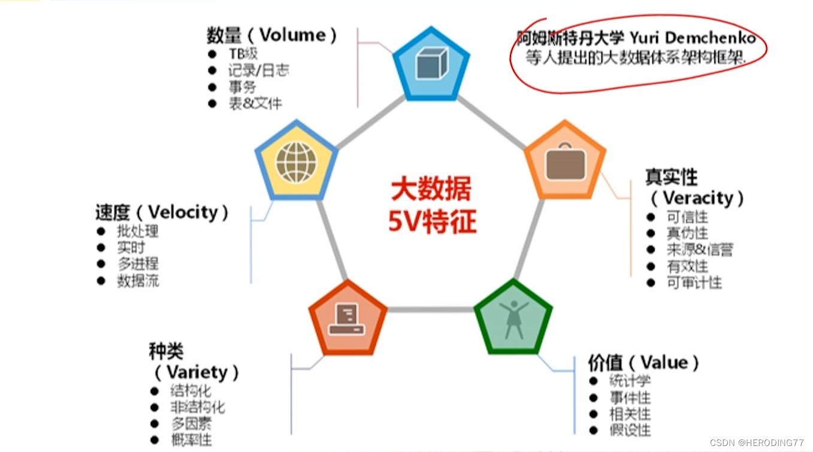
机遇与挑战
数据量大：要求大数据管理系统能够存储管理 TB 甚至 PB 级别的数据。
数据种类多：要求大数据管理系统能够在同一平台处理多种类型的数据。
产生速度快：要求大数据管理系统能够在数据产生的过程中实时处理数据（ms）。
潜在价值高：要求大数据管理系统能够支持使用机器学习、数据挖掘、数据分析等。
数据质量低：要求大数据管理系统能够支持更复杂的数据治理，数据分析和机器学习技术。
PS：总结就是，大，功能强，速度快
1.2.3 面向数据管理的分布式系统¶
从“一劳永逸”走向分类定制。
不可能一劳永逸的原因：社交网络、知识图谱都不是结构化数据。
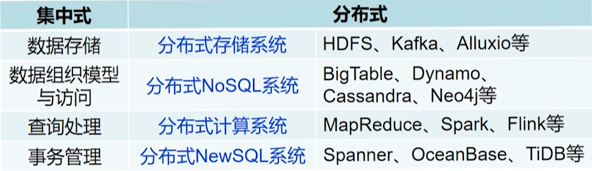
1.3 分布式计算系统¶
1.3.1 什么是分布式计算系统¶
作用于若干独立计算机之上，使得这些计算机能够协同执行计算完成某项应用的软件系统。
归根结底是为了解决某些类别的应用问题而设计的分布式系统。

分类
- 计算密集型应用：CPU 处理能力成为了首要限制因素。
- 数据密集型应用：I/O 带宽成为了首要限制性因素（关键）。
1.3.2 系统生态圈¶
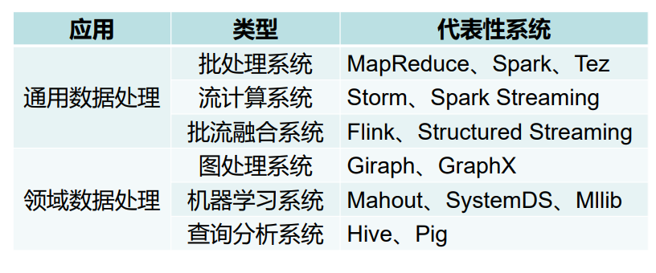
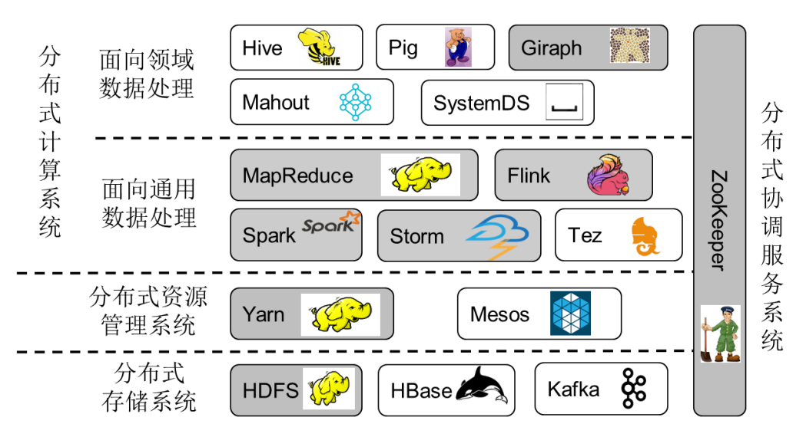
1.4 课程组织结构¶
- 设计思想
- 体系架构
- 工作原理
- 容错机制
- 编程示例
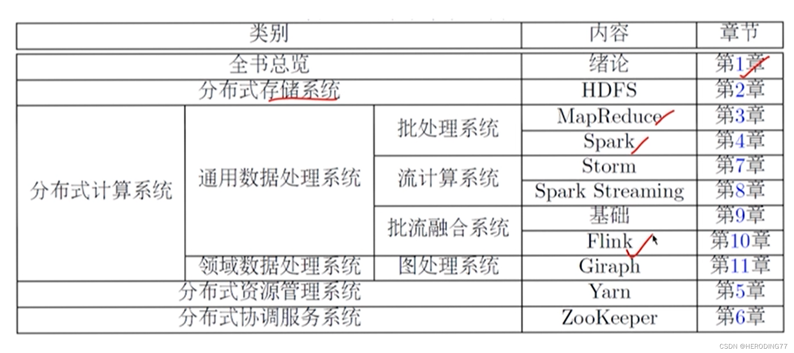
第二章：Hadoop 文件系统¶
2.1 设计思想¶
来源 Doug Cutting 开发的文本搜索库
诞生于 2006 年，MapReduce+HDFS
- HDFS：分布式文件系统
- MapReduce：分布式计算框架
集群网络拓扑
- 机架
- 节点
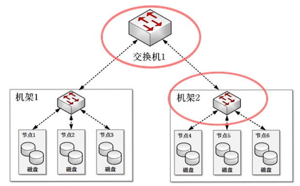
在没有 HDFS 之前遇到的一些问题：
- 无法存储大文件（上百 GB/TB）。
- 集群系统容错率低。
- 大文件并发读写问题。
HDFS：
- 文件分块存储（默认 64MB）
- 跨机器索引（块分散到各个机器上，用文件目录项保存索引）
- 分块冗余存储
- 简化文件读写（文件写入不再修改，仅允许多次读取，仅支持顺序写入）
2.2 体系架构¶
2.2.1 架构图¶
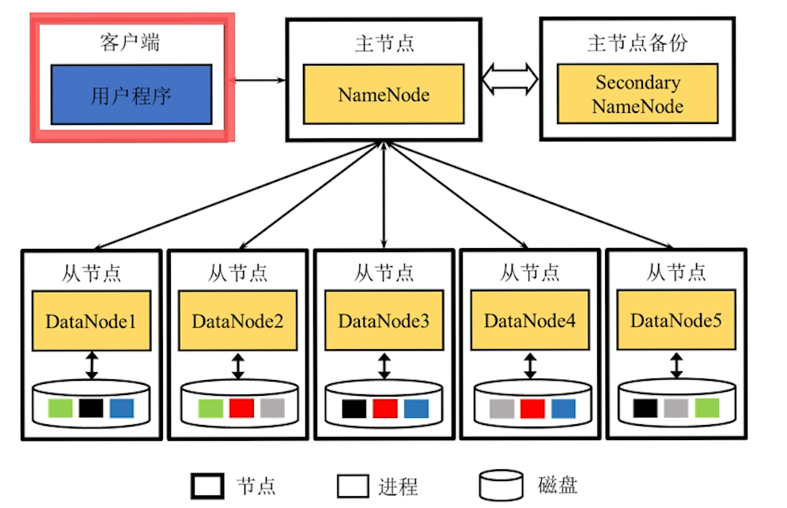
HDFS 角色
- NameNode
- 负责 HDFS 管理工作，包括管理文件目录结构、维护 DataNode 的状态等。
- 不实际存储文件。
- SecondaryNameNode
- 充当 NameNode 备份。
- 一旦 NameNode 故障用 SecondaryNameNode 恢复。
- DataNode
- 负责数据块的存储。
- 为客户端提供实际文件数据。
NameNode 管理的工具
- FsImage：内存中文件目录及其元信息在磁盘上的快照。
- EditLog：两次快照之间针对目录及文件修改的操作。

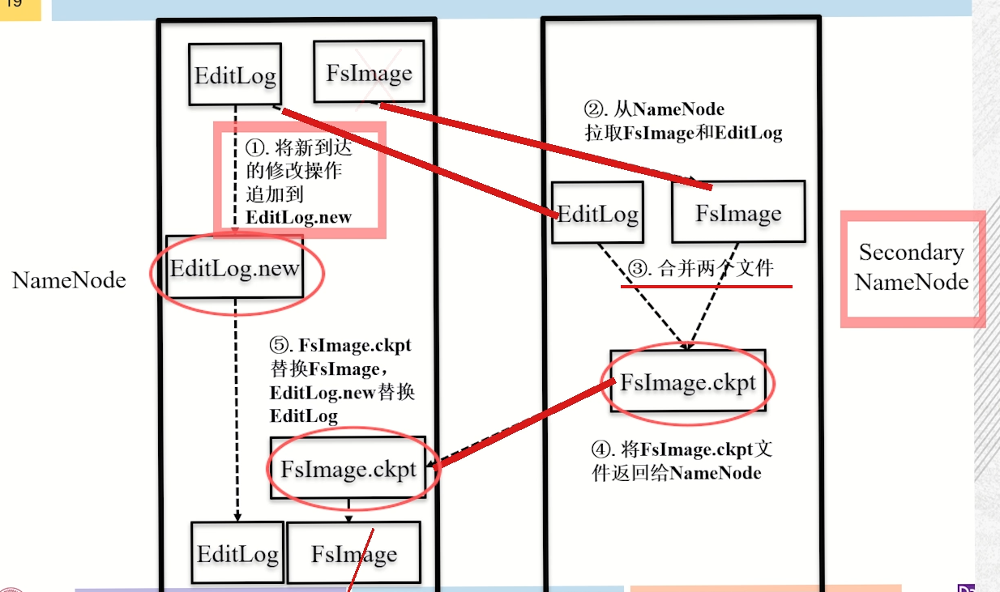
2.2.2 应用程序执行流程¶
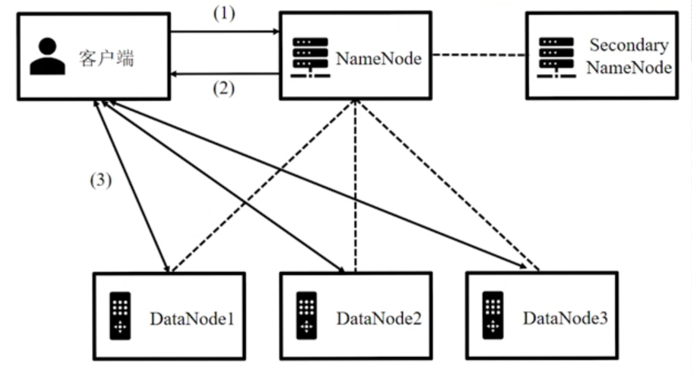
执行流程：
- 客户端向 NameNode 发起文件操作请求。
- NameNode 反馈
- 读写操作，告知客户端文件块存储位置。
- 创建、删除、重命名，NameNode 修改文件目录结构。
- 删除操作等待特定时间才会真正删除。
- 读写操作客户端获取位置信息后再与 DataNode 进行读写交互。
2.3 工作原理¶
2.3.1 文件分块与备份¶
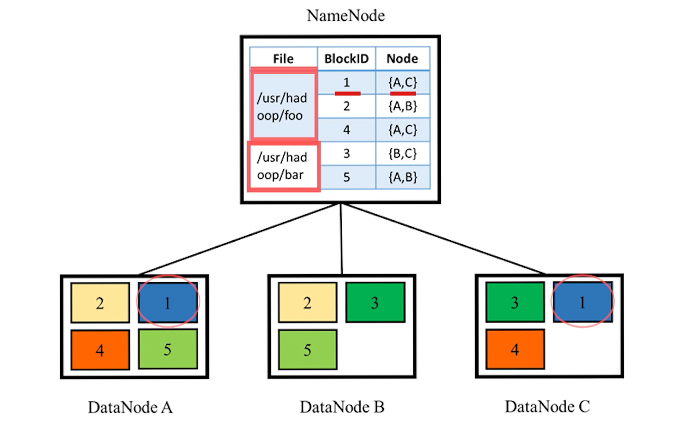
文件块存放策略
- 第一个副本
- 客户端和某一个 DataNode 位于统一物理节点，那么 HDFS 将第一个副本放在该 DataNode（本地快些）
- 如果不与任何的 DataNode 在同一物理节点，那么 HDFS 随机挑选磁盘没满、CPU 不忙的节点。
- 第二个副本
- 放置在不同机架的某一节点。
- 有利于整体上减少客户端跨机架的网络流量。
- 第三个副本
- 放置在第一个副本所在机架的不同节点上。
- 应对交换机故障文件块的读取。
2.3.2 文件写入¶
NameNode 告知客户端文件每个数据块存储在何处。
客户端将数据块直接传输到指定的数据节点。
2.3.3 文件读取¶
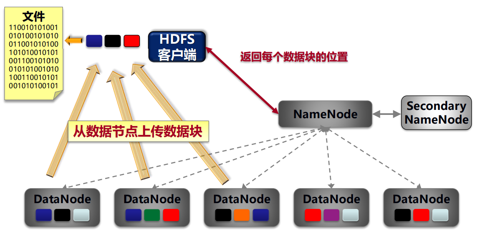
2.3.4 文件读写与一致性¶
一次写入多次读写
- 文件创建、写入和关闭后就不得改变文件中的内容。
- 已经写入到 HDFS 文件，仅允许在文件末尾追加数据。
- 一个文件写入操作，将拒绝其他对该文件读写请求。
- 读操作允许并发读。
2.4 容错机制¶
故障类型
- 磁盘错误
- DataNode 故障
- 交换机故障
- NameNode 故障
- 数据中心故障
2.4.1 NameNode 故障¶
根据 SecondaryNameNode 中的 FsImage 和 Editlog 数据进行恢复。
2.4.2 DataNode 故障¶
- 宕机，节点上面节点标记不可读。
- 定期检查备份因子。
2.5 编程示例¶
2.5.1 写文件¶
- 获取 HDFS 的文件系统对象
- 获取输出流 hdfsOutputStream
- 利用输出流写入 HDFS 文件
2.5.2 读文件¶
- 获取 HDFS 的文件系统对象
- 获取输入流 InputStream
- 将 HDFS 文件输入流拷贝至本地文件的输出流
Question¶
- 为什么需要 HDFS，没有 HDFS 会是怎么样的？
- 存储上百 GB/TB 级别的大文件。
- 保证文件系统的容错。
- 进行大文件的并发读写。
- HDFS 包括哪些部分，都有哪些作用？
详见 2.2.1 架构图。
第三章 批处理系统 MapReduce¶
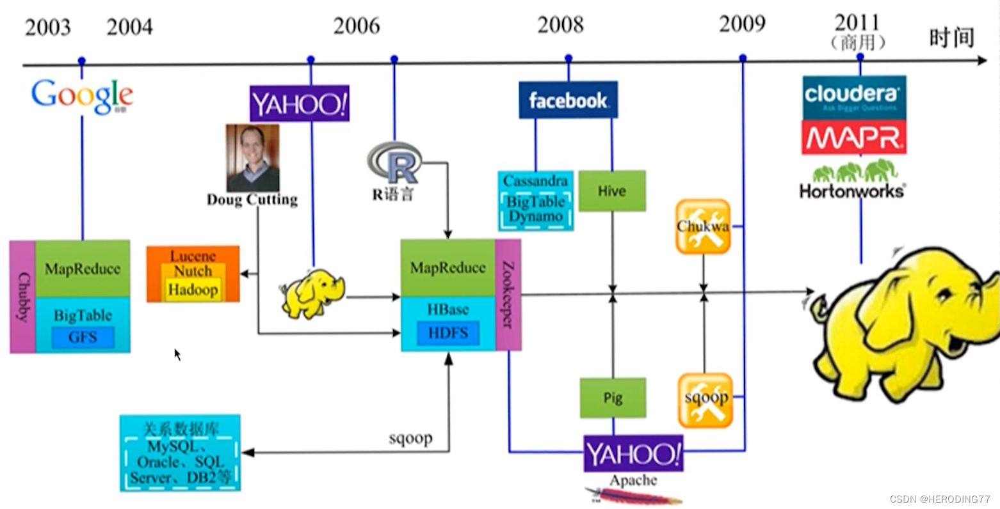
3.1 设计思想¶
3.1.1 MPI 与 MapReduce¶
MPI 是一个信息传递应用程序接口，包括协议和语义说明。
局限性：
- 用户角度看，程序员需要考虑进程之间并行问题，进程之间的通信需要显式表达。
- 系统实现角度看，MPI 程序以进程形式运行，进程崩溃的话无法提供容错功能（除非用户添加了故障恢复）。
3.1.2 数据模型¶
将数据抽象成键值对，在处理中对键值对进行转换。
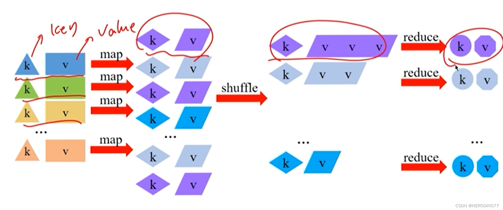
3.1.3 计算模型¶
Map+Reduce
- Map：将输入键值对转换成新的键值对。
- Reduce：对相同键的键值进行计算。
物理上，分而治之的思想，由多个任务并行计算完成。
3.2 体系架构¶
3.2.1 架构图¶
抽象架构图
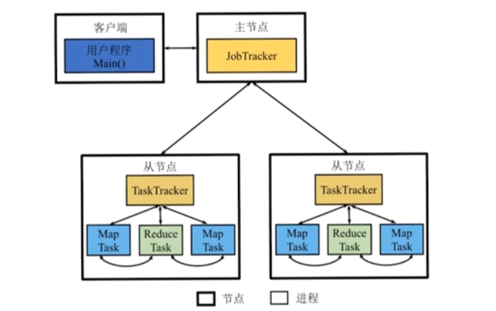
Hadoop MapReduce 架构图
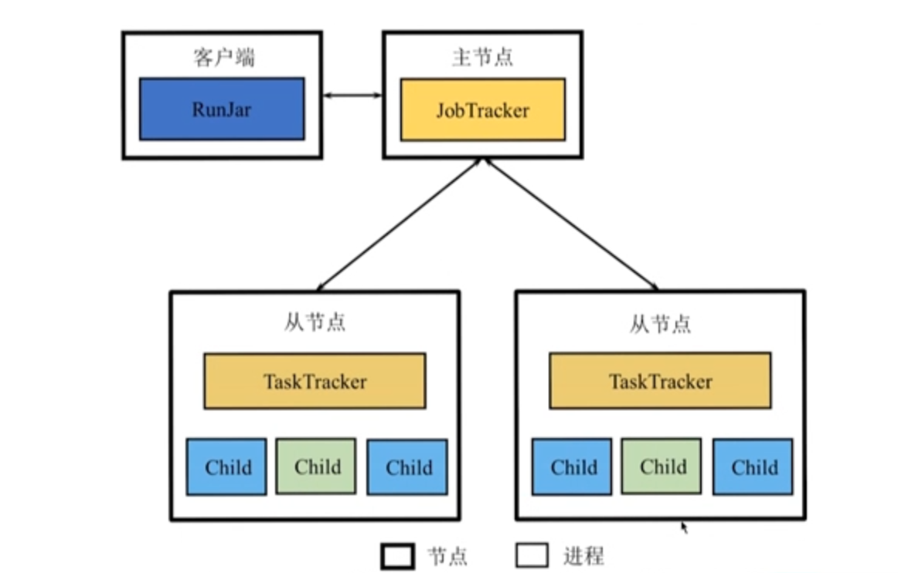
从外部看不到是 map 任务还是 reduce 任务。
JobTracker
- 资源管理：监控管理系统上的计算资源。
- 作业管理：将作业拆分成任务，并进行任务调度、跟踪任务的运行资源等信息。
TaskTracker
- 管理本节点资源
- 执行 JobTracker 的命令。
- 向 JobTracker 汇报情况。
MapReduce 是多进程方式，而 Spark 和 Flink 是多线程方式。
MapReduce 和 HDFS 的关系：
- 计算和存储分离。
- 计算向数据靠拢，而不是数据向计算靠拢。
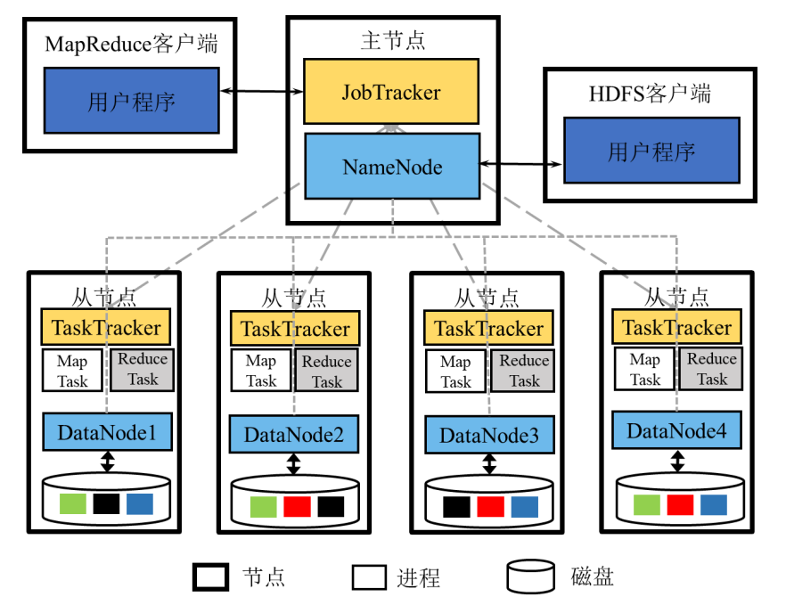
3.2.2 应用程序执行流程¶
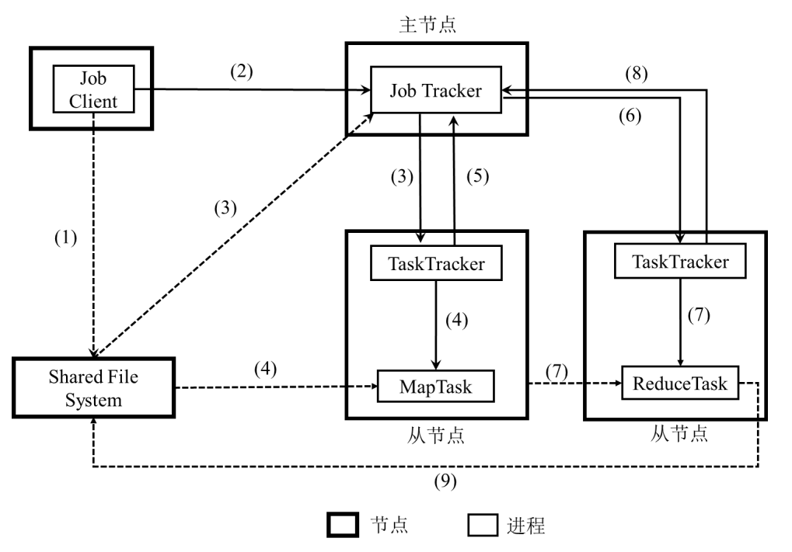
流程：
- Client 将用户编写的 MapReduce 作业配置信息、jar 包等信息上传到共享文件系统（通常 HDFS）；
- Client 提交作业给 JobTracker，告知作业信息位置；
- JobTracker 读取作业信息，生成一系列 Map 和 Reduce 任务，调度给有空闲 slot（资源）的 TaskTracker；
- TaskTracker 根据 JobTracker 指令启动 Child 进程执行 Map 任务，Map 任务从共享文件系统读取输入数据。
- JobTracker 从 TaskTracker 获取 Map 任务的进度信息。
- Map 任务完成，JobTracker 将 Reduce 任务分发给 TaskTracker；
- TaskTracker 根据获取的指令启动 Child 进行执行 Reduce 任务，Reduce 任务将从 Map 任务所在节点的本地磁盘（不是 HDFS）拉取 Map 的输出；
- JobTracker 从 TaskTracker 处获得 Reduce 任务进度信息。
- Reduce 任务结束将结果写入共享文件系统，意味着整个作业执行完毕。
3.3 工作原理¶
输入（HDFS）——>Map——>shuffle——>reduce——> 输出（HDFS）
3.3.1 数据输入¶
会有文件分块存储，可能存在跨块记录。Map 读取单位 Split。
Split vs Block
- 前者是逻辑概念，后者是物理概念。
- split 包含一些元信息，如数据起始位置，数据长度等。
- split 不包含跨块信息，但是 block 可能会有。
3.3.2 Map 阶段¶
[k1,v1]——>List([k2,v2])
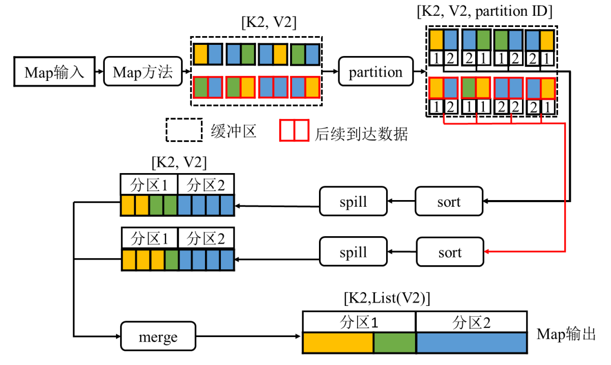
典型的二路归并排序的过程。
Map 任务的数量通常由 Split 数量决定。
3.3.3 Shuffle 阶段¶
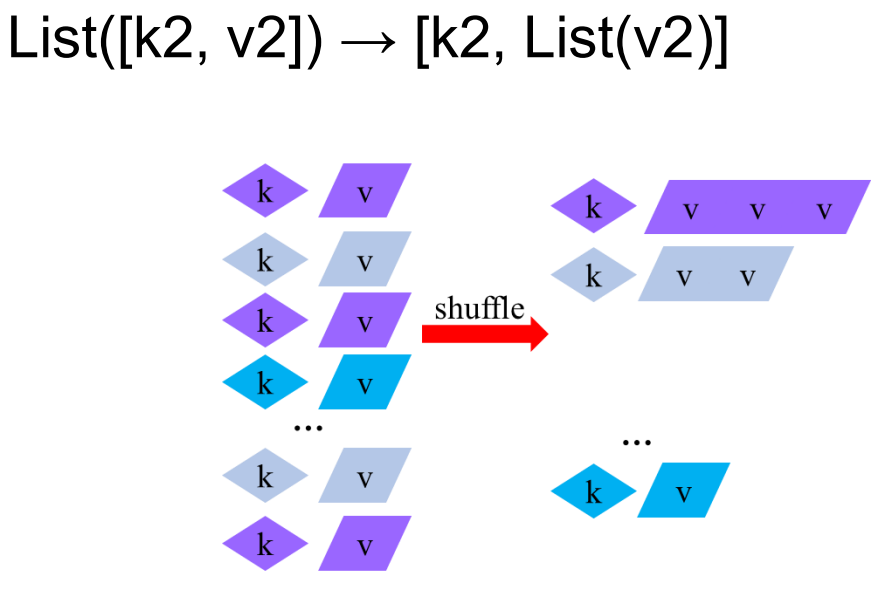
何时 shuffle？
- 系统中 Map 任务完成率达到设定阈值，启动 Reduce 任务。
- Reduce 拉取的数据一定是已经完成运行的 Map 任务。
3.3.4 Reduce 阶段¶
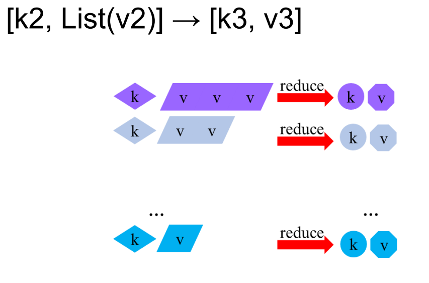
与 Map 的过程有相似，也是有归并排序的过程。
Reduce 任务的数量
按照用户写定的 Reduce 任务来执行。
3.3.5 数据输出¶
输入是一个文件，输出是一组文件。
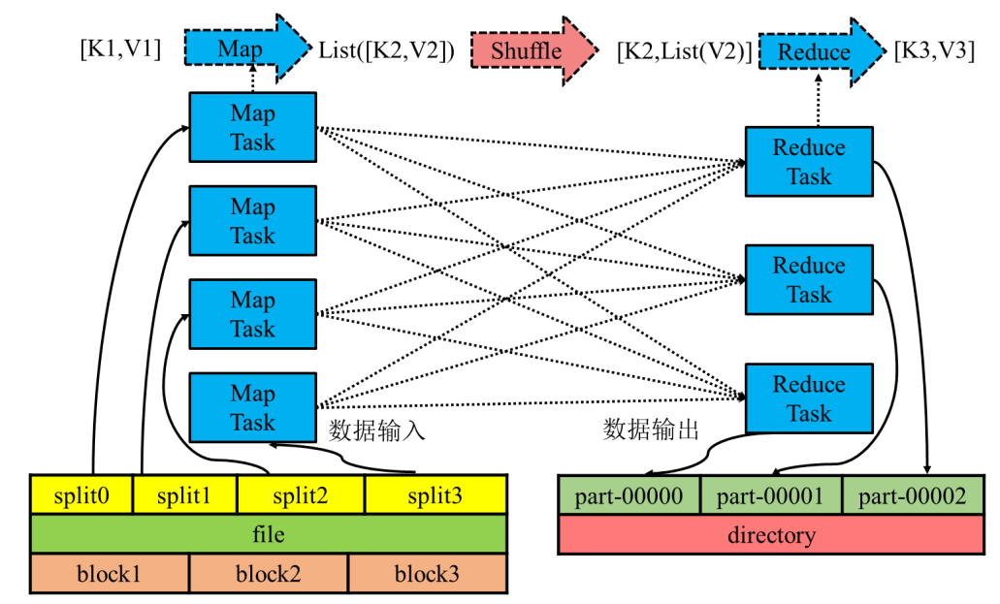
与输入数据节点相反，MapReduce 需要定义输出文件的格式，即 OutputFormat。
3.4 容错机制¶
- 主节点故障：宕机
- 从节点故障：宕机
- Task 故障：JVM 内存不够
3.4.1 JobTracker 故障¶
MapReduce1.0 没有处理 JobTracker 故障机制，成为单点瓶颈，所有作业都要重新执行。
3.4.2 TaskTracker 故障¶
心跳机制维持。
连接不上，JobTracker 安排其他 TaskTracker 重新运行失败的任务。
过程对用户透明。
3.4.3 Task 故障¶
- Map 故障
- Reduce 故障
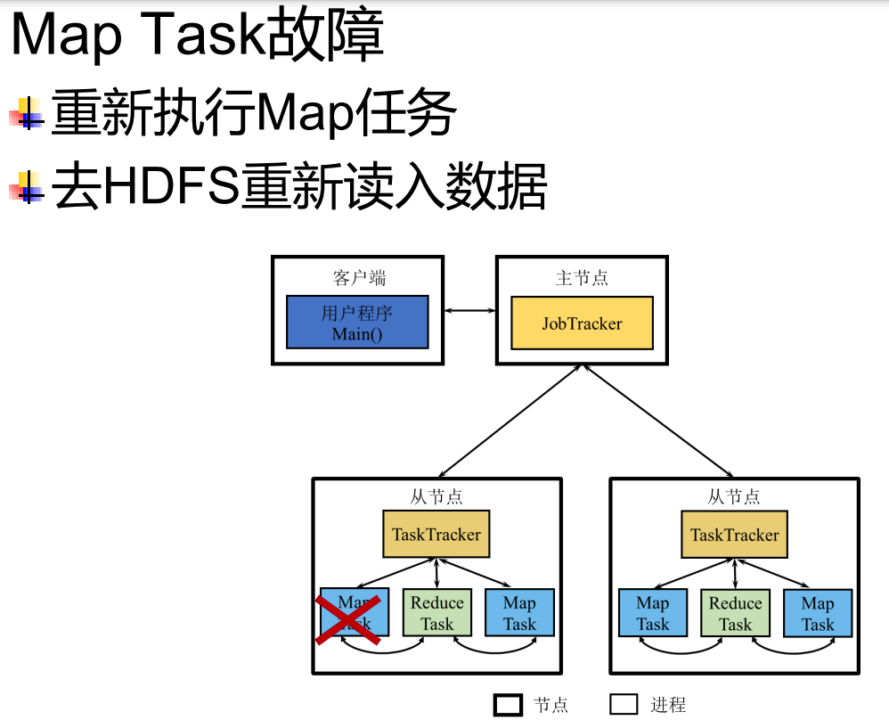
Reduce 任务重新从本地磁盘上读取数据。
当一个任务经过最大尝试次数运行后仍然失败，整个作业都会被标记失败。
3.5 编程示例¶
优化方案
- combine 方法
- 减少 Shuffle 数量
- 减少 Reduce 过程处理的数据量
Question
1.Combine 和 merge 的区别？
两个键值对 <“a”,1> 和 <“a”,1>，如果合并，会得到 <“a”,2>，如果归并，会得到 <“a”,<1,1>>
2.分布式 cache 在 MapReduce 中的作用？
起到一个广播的作用，将要处理的数据集进行分布式缓存，提高读取的速度。
第四章 批处理系统 Spark¶
最初是基于内存计算的批处理系统，现在也支持内外存同时使用。
Spark 曾在 2014 年，用十分之一的资源比 Hadoop 快 3 倍。
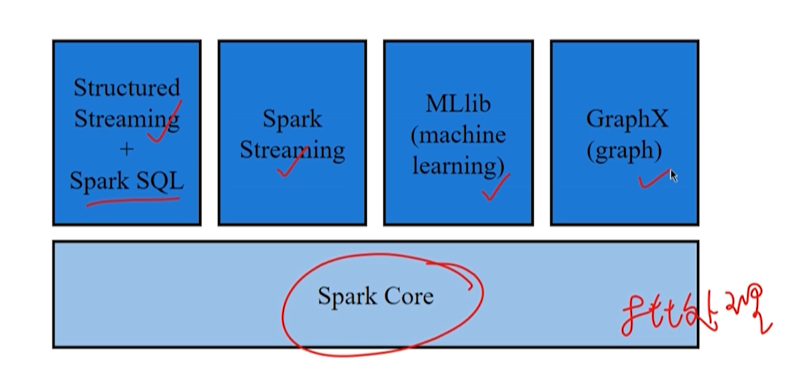
4.1 设计思想¶
4.1.1 MapReduce 的局限性¶
局限性
- 框架表达能力有限，基础算子太少（只有 Map 和 Reduce）。
- 单个作业 Shuffle 阶段数据以阻塞方式传输，IO 开销大、延迟高。
- 多个作业衔接涉及 IO 开销，应用程序延迟高。
4.1.2 数据类型¶
RDD（Resilient Distributed Dataset）
- 是一个数据集，Spark 操作对象是抽象的数据集而不是文件。
- 分布式，每个 RDD 可分成多个分区，一个 RDD 的不同分区可以存到集群中不同的节点上。
- RDD 具有弹性，具备可恢复的容错特性。
4.1.3 计算模型¶
操作算子：创建算子，转换算子，action 算子
创建算子
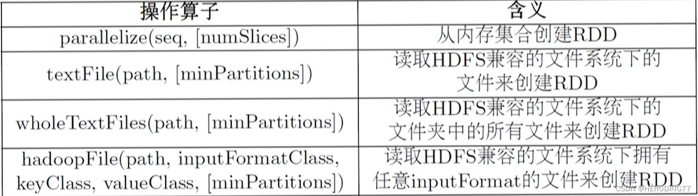
转换算子
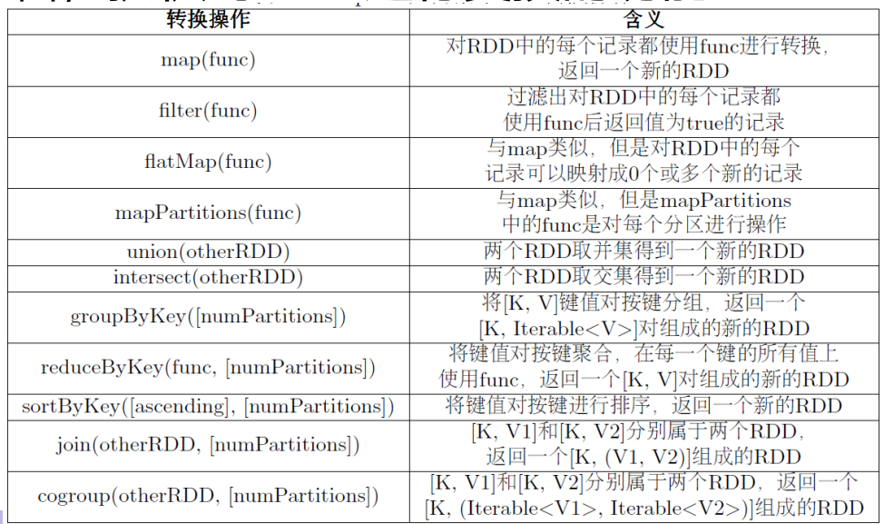
action 算子
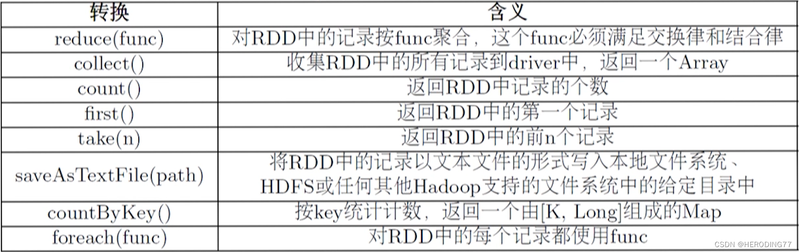
从算子操作角度描述计算的过程
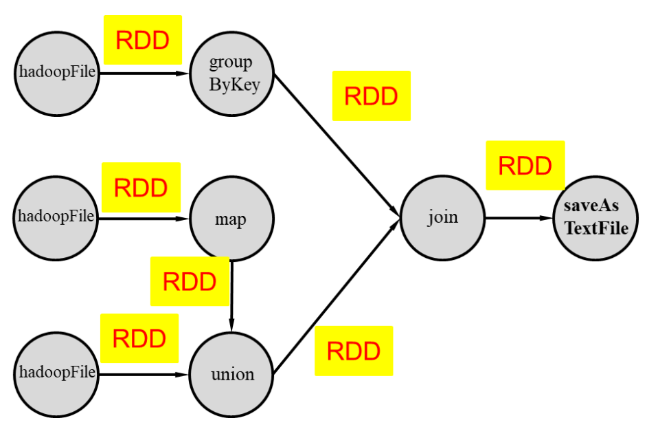
从 RDD 变换角度描述计算过程
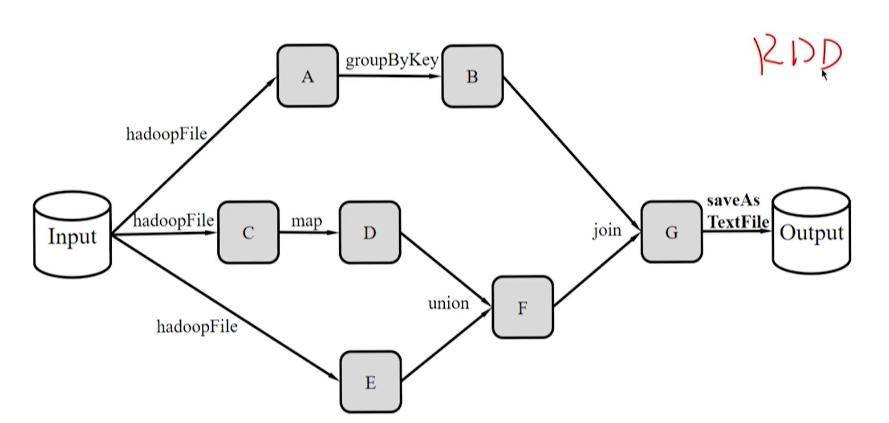
RDD Lineage（DAG 有向无环图拓扑结构）
- RDD 读入外部数据进行创建。
- RDD 经过一系列的转换操作，每次操作产生新的 RDD 供给下一次转换操作。
- 最后一个 RDD 经过 action 操作进行转换，输出到外部。
RDD 性质
- RDD 是只读的记录分区集合，创建后不可修改。
- RDD 不可变。RDD 操作后得到新 RDD，而不是在原来基础上修改。
- 遵循了函数式编程的特性。
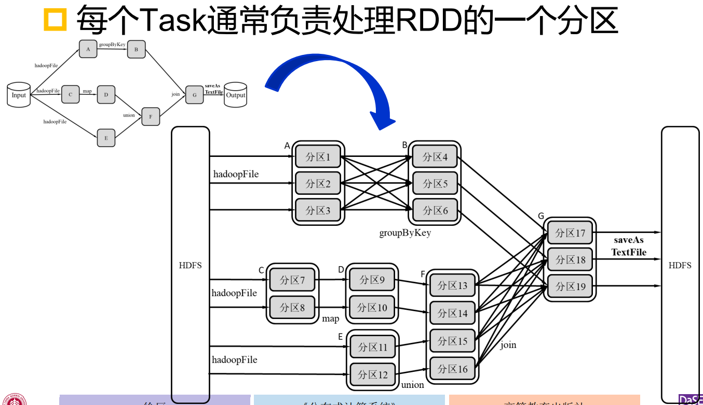
4.2 体系架构¶
4.2.1 架构图¶
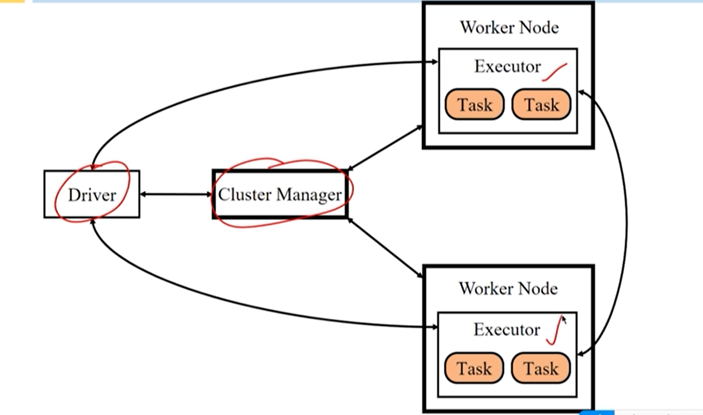
集群管理器（Cluster Manager）：负责管理整个系统的资源、监控工作节点。
- 在 Standalone 方式（不使用 yarn 等其他资源管理系统），集群管理器包含 Master 和 Worker。
- 在 Yarn 方式中集群管理器包括 Resource Manager 和 Node Manager。
执行器（Executor）：负责任务执行
- 执行器是运行在工作节点上的一个进程，启动若干个线程 Task 或线程组 TaskSet 来进行执行任务。
- 在 Standalone 部署下，Executor 进程的名称为 CoarseGrainedExecutorBackend。
驱动器（Driver）：负责启动应用程序的主方法并管理作业的运行。
Spark 架构实现了资源管理和作业管理两大功能的分离。
- Cluster Manager 负责集群资源管理。
- Driver 负责作业管理。
Standalone 架构图
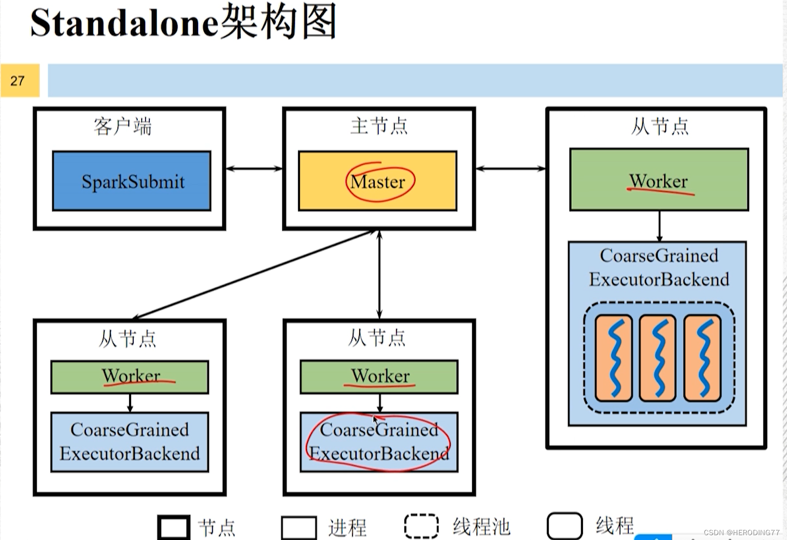
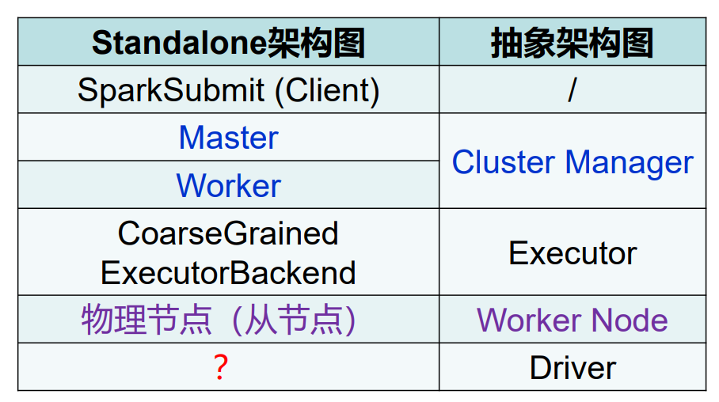
Driver 如何体现？
逻辑上，Driver 独立于主节点、从节点和客户端，但会根据应用程序的部署方式存在。
- Client 部署：和客户端在同一个进程（SparkSubmit）存在。
- Cluster 部署：系统将由某一 Worker 启动一个进程名为 DriverWrapper 作为 Driver。
客户提交应用程序时可以选择 Client 或 Cluster 部署方式。
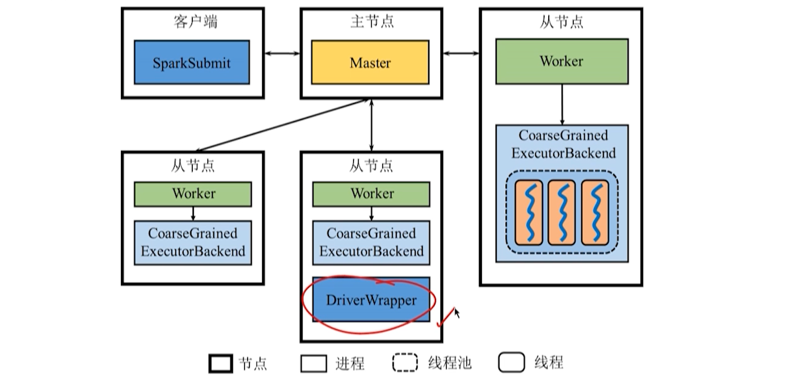
Spark VS Hadoop
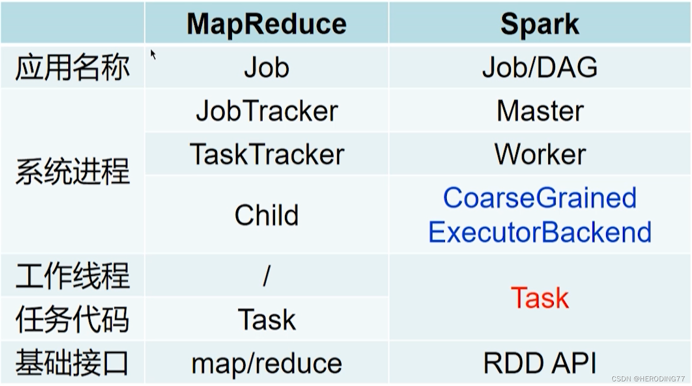
4.2.2 应用程序执行流程图¶
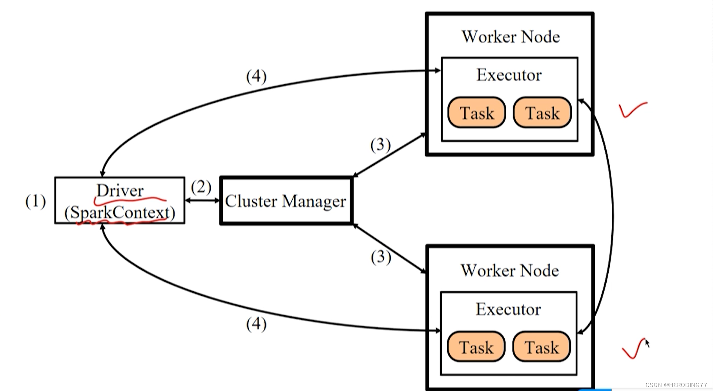
- 启动 Driver，Client 方式直接在客户端启动并向 Master 注册；Cluster 部署方式将应用程序提交给 Master，Master 指定 Worker 启动 Driver 进程（DriverWapper）。
- 构建基本运行环境，由 Driver 创建 SparkContext，向 Cluster Manager 申请资源，由 Driver 进行任务分配和监控。
- Cluster Manager 通知工作节点启动 Executor 进程，内部多线程工作。
- Executor 向 Driver 注册。
- SparkContext 构建 DAG 进行任务划分，交给 Executor 中线程执行任务。
4.3 工作原理¶
4.3.1 Stage 划分¶
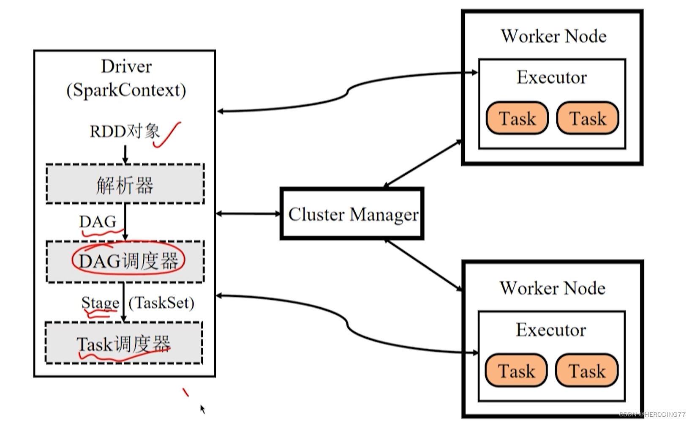
RDD 依赖关系
- 窄依赖：父 RDD 的分区和子 RDD 的分区是一对一或者多对一的关系。
- 宽依赖：父 RDD 的一个分区和子 RDD 的分区一对多的关系。
Stage 划分方法
- 在 DAG 中反向解析，遇到宽依赖就断开。
- 遇到窄依赖就把当前的 RDD 加入到 Stage 中。
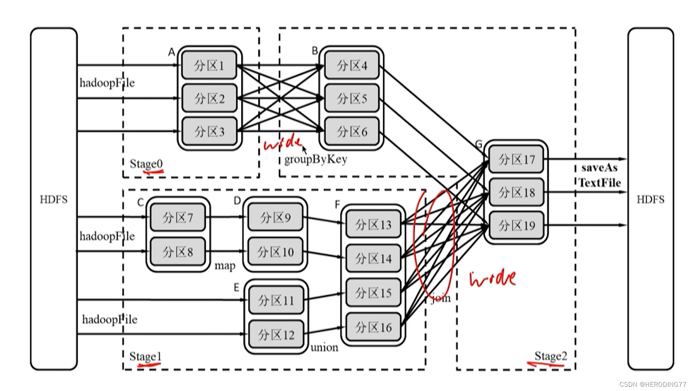
基于 Operator DAG 的 Stage 划分
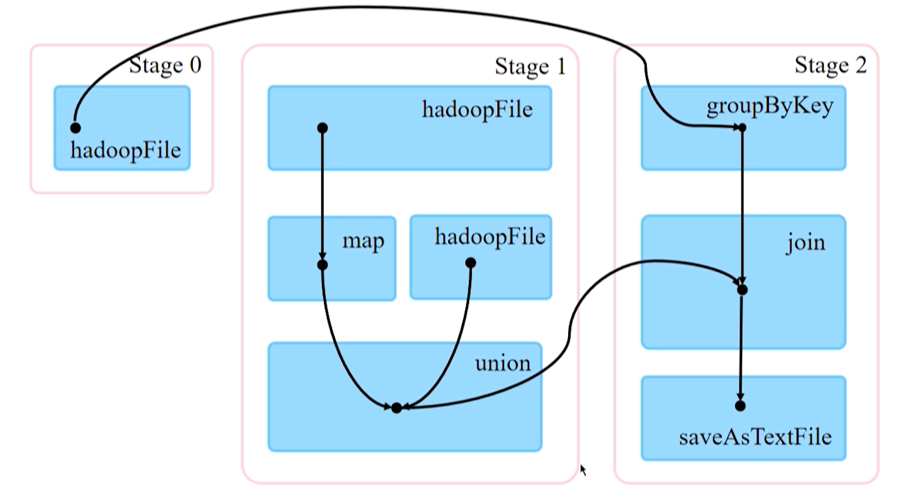
Stage 类型
- ShuffleMapStage
- 输入：可以从外部数据获得，也可以是另一个 ShuffleMapStage 的输出。
- 输出：以 Shuffle 为输出，作为另一个 Stage 的开始。
- 特点：不是最终的 Stage，输出一定经过 Shuffle 过程并作为后续 Stage 输入，不一定在每个 DAG 中存在。
- ResultStage
- 输入：可以从外部数据获得，也可以是另一个 ShuffleMapStage 的输出。
- 输出：一定产生结果或存储。
- 特点：是最终的 Stage，一个 DAG 中一定包含。
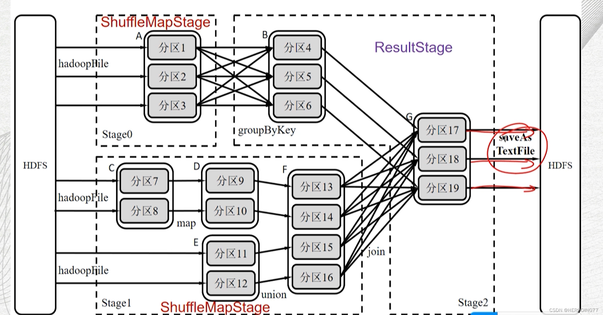
4.3.2 Stage 内部数据传输¶
所有依赖都是窄依赖，可以实现 pipeline（流水线）方式进行数据传输。
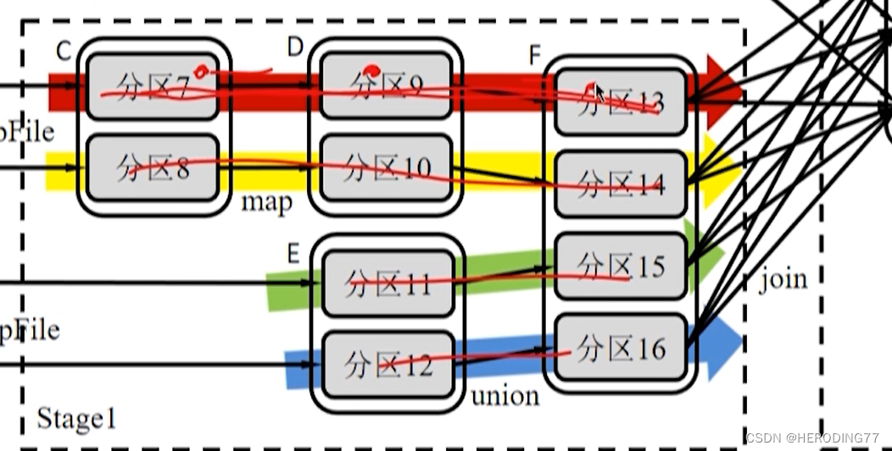
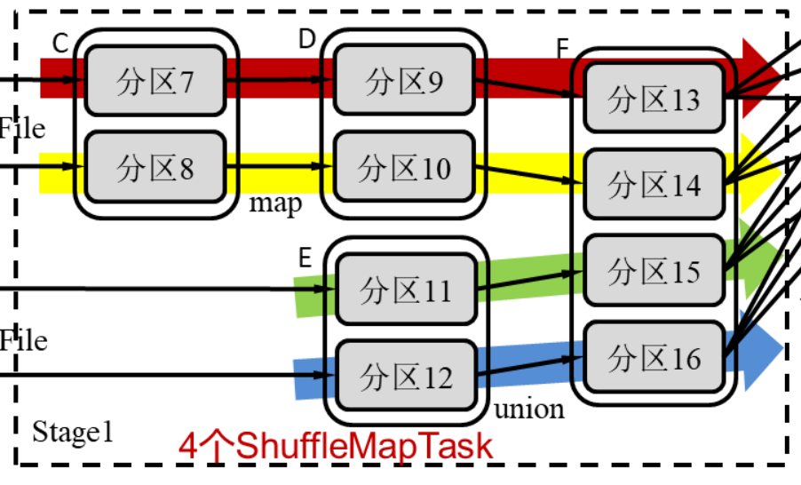
流水线是非阻塞方式，而 Shuffle 是阻塞方式。
ShuffleMapTask vs ResultTask
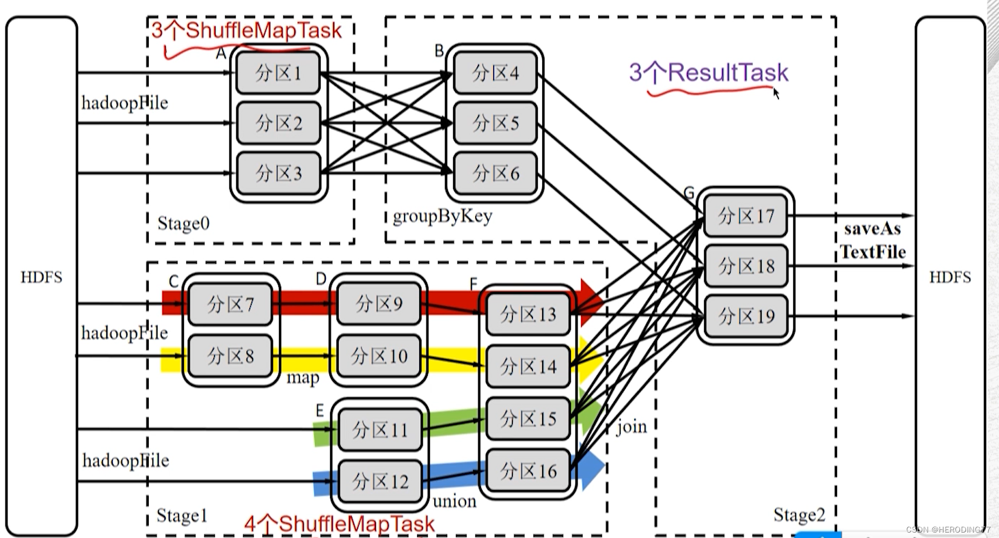
总共需要 10 个 Task。
4.3.3 Stage 之间数据传输¶
所有依赖都是宽依赖，只能 Shuffle 进行。
Shuffle 发生在两个 ShuffleMapStage 之间或者 ShuffleMapStage 与 ResultStage 之间。从 Task 层面看，过程表现为两组 ShuffleMapTask 之间或者一组 ShuffleMapTask 与一组 ResultTask 之间的数据传输。
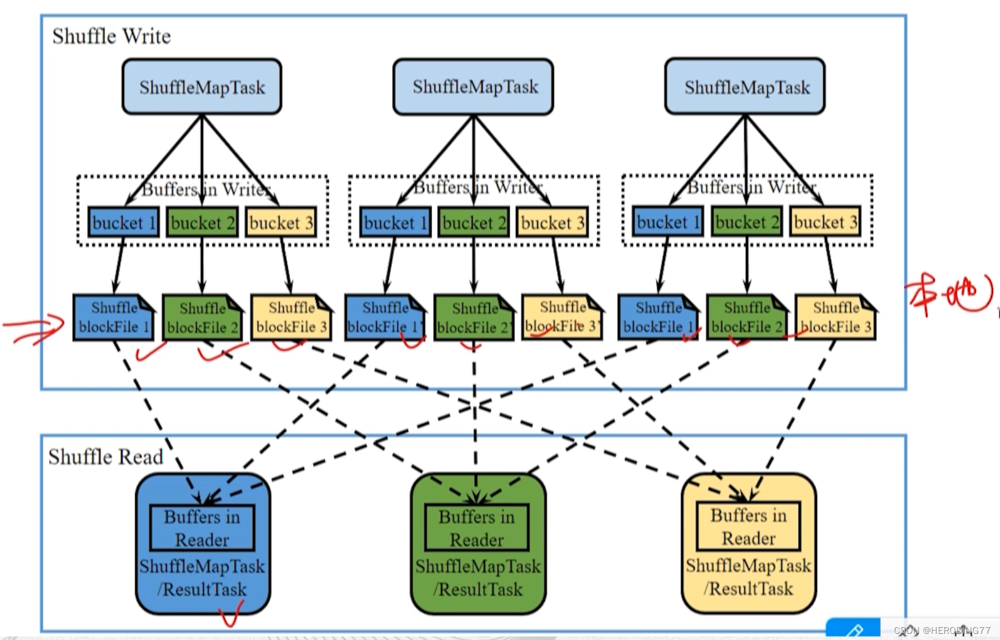
- Shuffle Write 阶段，ShuffleMapTask 需要将输出 RDD 的记录按照 partition 函数划分到相应的 bucket 当中并物化到本地磁盘生成 ShuffleblockFile，之后才可以在 Shuffle Read 阶段被拉取。
- Shuffle Read 阶段，ShuffleMapTask 或者 ResultTask 根据 partition 函数读取相应的 ShuffleblockFile，存入到 buffer 并进行后续计算。
4.3.4 应用与作业¶
Application：用户编写的 Spark 应用程序
Job：一个 Job 包含多个 RDD 及作用于相应 RDD 转换操作，最后都是 action。
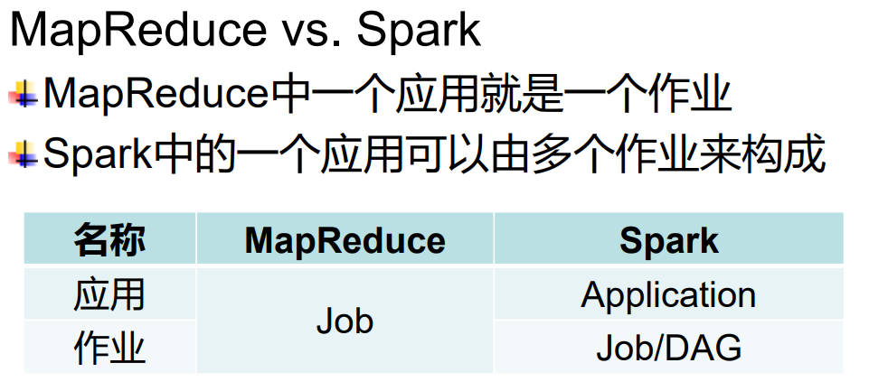
Stage：一个 Job 会分为多组 Task（即 Stage），也被称为 TaskSet。
- Job 的基本调度单位。
- 代表了一组关联、相互之间没有 Shuffle 依赖关系的任务组成的任务集。
Task：运行在 Executor 上的工作单元。
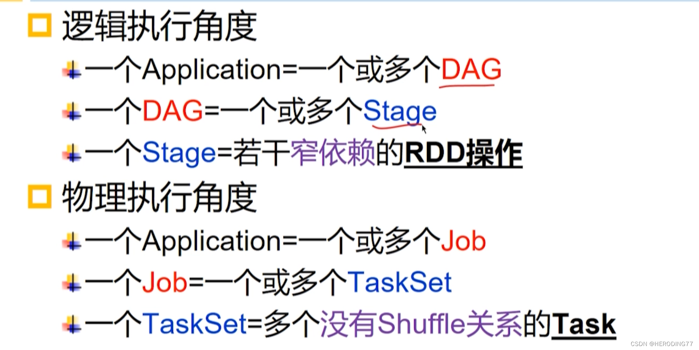
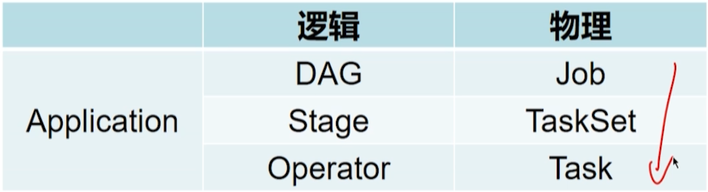
4.4 容错机制¶
4.4.1 RDD 的持久化¶
故障类型
- Master 故障：ZooKeeper 配置多个 Master
- Worker 故障
- Executor 故障
- Driver 故障：重启
RDD 存储机制
- RDD 达到相应存储空间的阈值，Spark 会使用置换算法将部分 RDD 的内存空间腾出。
- 不做声明，RDD 会直接被丢弃。
- RDD 提供持久化（缓存）接口
- Persist(StorageLevel)：接受存储类型，可配置各种级别，持久化后会保留在工作节点中被后续动作操作重复使用。
- Cache()：相当于 Cache(MEMORY_ONLY)
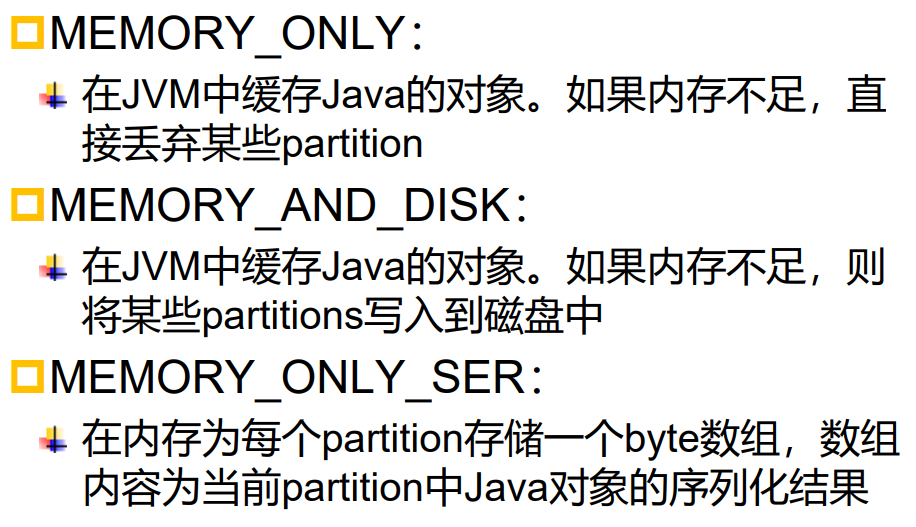
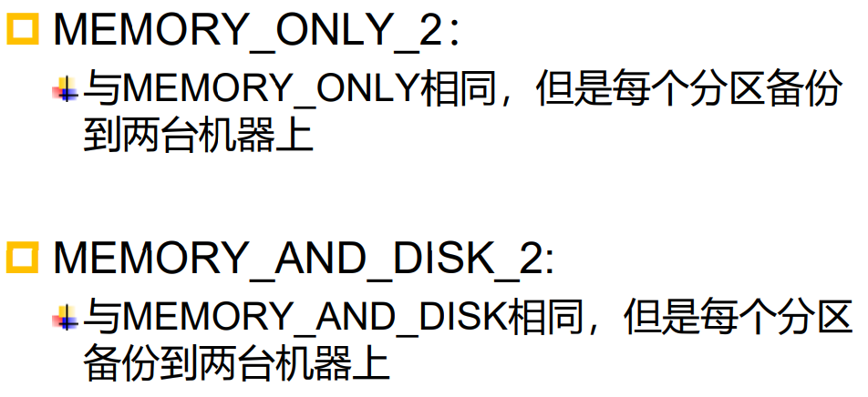
4.4.2 故障恢复¶
Lineage 机制
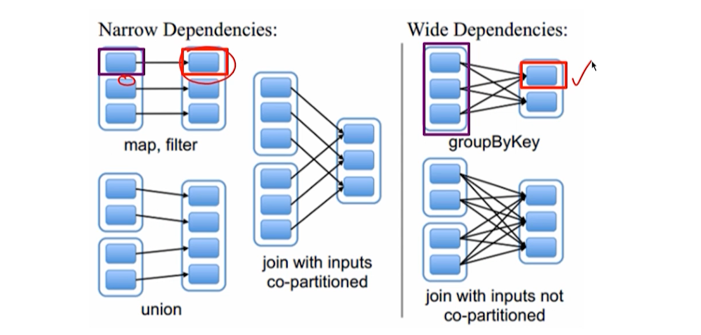
红色部分丢失，需要重新计算紫色部分。
- 重新计算丢失分区。
- 重算过程在不同节点之间可以并行。
与数据库恢复的比较
- RDD Lineage：记录粗粒度的操作
- 数据复制或者日志：记录细粒度的操作
4.4.3 检查点¶
前述机制不足之处：
- Lineage 可能非常长。
- RDD 持久化保存到集群内机器的磁盘，并不完全可靠。
检查点将 RDD 写入到外部可靠的分布式文件系统（如 HDFS）。实现层面，写检查点是个独立的作业，在用户作业结束后进行。
4.5 编程示例¶
4.5.1 词频统计¶
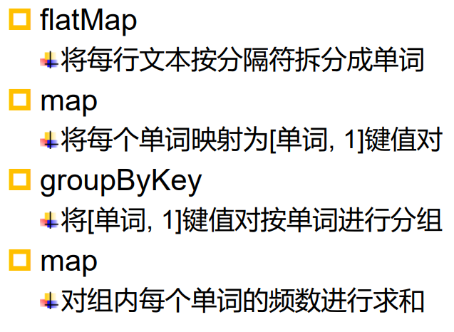
优化方案
MapReduce 要求用户自定义 Combine 方法，而 Spark 内置了 combine 机制，简化了用户编程。
4.5.2 关系表自然连接及其优化¶
Spark 中表连接遇到大小表问题：
因为 Shuffle 开销很大，所以将小表广播出去，避免大表进行 Shuffle。
4.5.3 网页链接排名¶
属于迭代实现 Job 的过程，但是整体是一个 Application。
MapReduce 迭代间数据传递需要借助读写 HDFS 完成，而 Spark 迭代间的 RDD 数据可以直接驻留在内存中。
4.5.4 K 均值聚类¶
特点：每个数据点都要与所有聚类中心进行计算。
通过广播的形式进行优化，减少了 shuffle 的次数。
4.5.5 检查点¶
以 PageRank 为例，每五轮迭代对网页排名写一次检查点。
写检查点前缓存网页排名的 RDD。
- 写检查点是一个独立的作业，先缓存待写入的检查点的 RDD 以避免重复计算。
Question
- 为什么 Spark RDD 设计为不可变？
以空间换时间的一个例子。
- 为什么会区分 client， cluster 模式？
满足调试和生产的需求。
第五章 资源管理系统 Yarn¶
5.1 设计思想¶
5.1.1 作业与资源管理¶
MapReduce1.0 的缺陷
- 资源管理与作业紧密耦合
- 资源管理不单是 MapReduce 系统所需要的，而是通用的。
- 作业的控制管理高度集中
- JobTracker 内存开销大。
- 同一时刻执行的作业数量增加，JobTracker 之间的通信频率增大，造成进程不稳定。
5.1.2 平台与框架¶
系统
- 平台：具有提供资源功能的系统
- 框架：运行在平台上的系统
Yarn 应用
Yarn 管理的粒度是应用
- 但并不一定就是框架中的应用
- 运行在 Yarn 平台上的框架可以将应用或作业映射为 Yarn 的应用
| Yarn | Spark | MapReduce |
|---|---|---|
| 应用 | application | Job |
5.2 体系架构¶
5.2.1 架构图¶
ResourceManager
资源管理器：负责整个系统的资源管理和分配
- 资源调度器（Resource Scheduler）：分配 Container 并进行资源调度。
- 应用程序管理器（Application Manager）：管理整个系统中运行的所有应用。
- 应用程序提交
- 与协调器协商资源以启动 ApplicationMaster
- 监控 ApplicationMaster 运行状态
NodeManager：负责每个节点资源和任务管理
- 定时向 RM 汇报节点的资源使用情况和 Container 运行状态。
- 接受并处理来自 AM 的 Container 启动/停止等各种请求。
ApplicationMaster：当用户基于 Yarn 平台提交一个框架应用，Yarn 均启动一个 AM 用于管理该应用。
Container：资源的抽象表示，包括 CPU、内存等资源，是一个动态资源划分单位。
当 AM 向 RM 申请资源时，RM 向 AM 返回以 Container 表示的资源。
Yarn 的优势
- 资源管理与作业管理相分离
- Yarn 是独立出来的资源管理系统。MapReduce2.0 只作为计算系统负责作业管理。
5.2.2 应用程序执行流程¶
- 用户编写应用程序，向 Yarn 提交应用程序。
- RM 负责接收处理来自客户端的请求，尝试为该程序分配第一个 Container，分配成功在该 Container 中启动 AM。
- AM 向 RM 注册，客户端可以通过 RM 查看应用程序资源使用情况。AM 将应用解析为作业并进一步分解为若干任务，并向 RM 申请启动这些任务的资源。
- RM 向提出申请的 AM 分配以 Container 形式表示的资源。AM 申请到资源在多任务之间分配。
- AM 确定分配方案后，与对应的 NM 通信，在相应的 Container 中启动相应的工作进程用于执行任务。
- 各个任务向 AM 汇报状态和进度，让 AM 实时掌握各个任务的运行状态。
- 任务结束，AM 释放资源，向 RM 注销关闭自己。
5.3 工作原理¶
5.3.1 单平台多框架¶
5.3.2 平台资源分配¶
RM 中的调度器维护了一个或多个应用队列。每个队列有一定的资源，同一队列共享资源。
Yarn 进行资源分配的对象是应用，用户提交的每个应用会分配到其中一个队列中，而队列决定了该应用能使用的资源上限。
资源分配策略
- FIFO
先到先得，等待时间长。
- Capacity Scheluler
维护了层级式的队列，避免了某一长时间运行的应用独占资源的情况，但是会有资源空闲的问题造成浪费。
- Fair Scheduler
队列之间资源共享。
5.4 容错机制¶
- Resource Manager 故障
- 从持久化存储中恢复状态信息
- 部署多个 RM 通过 ZooKeeper 协调，保证 RM 的高可用。
- Node Manager 故障
- AM 向 RM 重新申请资源运行这些任务
- RM 将分配其他节点的 Container 执行这些任务
- NM 故障恢复，重新向 RM 进行注册重置本地状态。
- Application Master 故障：重启
- Container 中的任务故障：重启
5.5 编程示例¶
5.5.1 Yarn 平台运行 MapReduce 框架¶
5.5.2 Yarn 平台运行 Spark 框架¶
Yarn-Cluster 模式
Yarn-client 模式
Yarn-client vs Yarn-cluster
Yarn-client
- Driver：在客户端启动的进程中
- Application：名为 ExecutorLauncher 向 RM 申请资源，用 Container 资源去链接其他的 NM，然后启动 executor
Yarn-Cluster
- Driver 存在 NM 上的某一个 AM。
第六章 协调服务系统 ZooKeeper¶
6.1 设计思想¶
设计目标：将实现复杂的分布式一致性服务封装为一个高效可靠的原语集，并以一系列简单易用的接口提供给用户。
工作原理：存储元数据或配置信息，以便协调服务。
6.1.1 数据模型¶
ZooKeeper 维护类似文件系统的层次结构，数据模型为一棵树。每个数据节点称为 Znode，每个 Znode 均保存信息。
Znode
- 持久 Znode：除非主动移除，否则一直存在 ZooKeeper 系统中。
- 临时 Znode：生命周期与客户端会话绑定。
ZooKeeper 允许用户为 Znode 添加顺序，如图上/app1/p1_1。
6.1.2 操作原语¶
- Create
- Delete
- Exists
- Get data：从某个 Znode 读取数据。
- Set data：从某个 Znode 写入数据。
- Get children
- Sync：等待数据同步。
6.2 体系架构¶
ZooKeeper 节点包含一组服务器，用于存储 ZooKeeper 的数据，每台服务器均维护一份树形结构数据的备份。服务器种类：
领导者：通过选主过程（选主算法）确定，直接为客户端提供读写服务。
追随者：仅能提供读服务，客户端发给追随者的写操作要转发给领导者。
观察者：作用与追随者类似，区别在于不参与选举领导者过程，该角色可选。
客户端与某一服务器通过会话连接，用心跳保持连接。客户端能够接收来自服务器的 Watch 事件通知。Watch 事件是指客户端可以在某个 Znode 中设置一个 Watcher。可以返回服务器变化的通知。
6.3 工作原理¶
ZooKeeper 属于轻量级的数据存储系统，维护数据多个副本。
ZooKeeper 要保证各个节点之间副本的一致性，所以需要确定领导者。
6.3.1 领导者选举¶
分布式一致性协议用于解决分布式系统如何就某个提议达成一致的问题，paxos 是实现该协议的经典算法之一。其核心思想在于由某些节点发出提议，然后由其他节点进行投票表决，最后所有节点达成一致。
6.3.2 读写请求流程¶
6.3.2.1 读请求¶
- 客户端与某服务器建立连接并发起写数据请求。
- 如果服务器为追随者或观察者，则将写请求转发给领导者，否则领导者直接处理。
- 理论上领导者需要将写请求转发给所有的服务器节点，直到所有服务器节点均成功执行写操作。该写请求才完成，事实上半数以上写操作完成即可认为完成。该过程是数据同步的过程，需要使用分布式一致性协议，其中需要同步的数据可视为提议。
- 服务端向客户端返回写成功的信息。
6.3.2.2 写请求¶
客户端返回写请求时，追随者、观察者、领导者都可以响应请求，前两者可能不是最新的，因此可以调用 sync()等待数据同步。
- 客户端与某服务器连接并发起 sync()请求。
- 如果服务器是观察者或追随者，则与领导者进行数据同步。
- 服务器向客户端返回同步最新消息。
- 客户端从服务器读取数据。
6.4 容错机制¶
领导者故障：重新选举。
追随者或观察者故障：不影响整体，恢复的时候从领导者或其他节点同步数据。
6.5 典型示例¶
6.5.1 命名服务¶
为了表示各种资源，需要创建命名空间，从而方便在命名空间定位所需的资源。
如图就是用户上传名为“hdfs://app/test.txt”的文件的过程。
6.5.2 集群管理¶
为了防止从节点故障，因此从节点状态监控、多主节点选主的方式必不可少。
从节点状态监控：
通过创建临时 Znode 实现，以 MapReduce 为例，TaskTracker 启动在/cluster 下创建一个临时 Znode，一旦 TaskTracker 故障，断开与 TaskTracker 的连接，Znode 被删除。
选主问题
为了防止单个 JobTracker 存在单点故障问题，需要配置多个 JobTracker 实现 MapReduce 系统的高可用性。主节点以 Znode 下标小的为主节点，一旦宕机交给后一位。
6.5.3 配置更新¶
分布式系统在运行过程中通常需要动态修改配置。进程 A 创建配置后，如果进程 B、C 需要使用，需要不断监听 A 的更新通知，一旦更新，读取/config 配置进行相应操作。
6.5.4 同步控制¶
双屏障机制（对于一组迭代作业）
- 进程执行一轮迭代计算的前提通常是所有进程均已做好准备。
- 所有参与进程所负责的任务均执行结束后，本轮迭代计算才能视为已完成。
第七章 流计算系统 Storm¶
MapReduce、Spark：静态数据
Storm：动态实时数据（流数据）
7.1 设计思想¶
Storm 流计算系统处理数据以流的形式存在。
7.1.1 连续处理¶
批处理中，任务短时进行，处理完毕数据即终止。
流计算需要长期运行，理论上无界。计算任务长期驻留在计算节点并且更新自身的状态。
状态：一种特殊数据，维护部分计算结果（后期 Storm 才维护状态）。
7.1.2 数据模型¶
Storm 将流数据看作一个无界的、连续的元组序列。
元组：一个元组对应一条记录，一条记录包含若干字段。
7.1.3 计算模型¶
Storm 使用拓扑抽象描述计算过程，拓扑是由 Spout 和 Bolt 组成的网络。
拓扑在逻辑上是一个有向无环图（DAG）。
边描述了数据流动的方向。
Spout：流数据源头，负责从数据源不断读取数据，然后封装成元组发送给 Bolt。
Bolt：描述针对流数据转换过程，内部封装了消息处理逻辑，负责将接收的流数据转换为新的流数据（过滤、聚合、查询等操作）。
拓扑中 Bolt 在物理上由若干任务实现。
7.2 体系架构¶
7.2.1 架构图¶
Storm 采用主从架构，主要工作部件包括：Nimbus、Supervisor、Worker 和 ZooKeeper。Nimbus 位于主节点，Supervisor 和 Worker 位于从节点。主从节点协调依赖于 ZooKeeper。
- Nimbus：主节点运行的后台进程，类似于 JobTracker，存储用户的 Topology 程序代码，分发代码、分配任务和检测故障等。
- Supervisor：从节点运行的后台进程，类似于 MapReduce 中的 TaskTracker。负责监听所在节点的机器工作，根据 Nimbus 分配的任务决定或停止 Worker 进程。一个从节点同时运行多个 Worker 进程。
- Zookeeper：负责 Nimbus 和 Supervisor 之间的协调工作。Supervisor 的地址和作业的元信息等均存在 ZooKeeper 中。数据恢复要读取 ZooKeeper 数据。
- Worker：负责任务运行的进程，内部多个线程执行。
其中，Nimbus 和 Supervisor 作为 Storm 的系统服务启动，Worker 进程随着应用程序执行而启动。Executor 线程执行同一个组件（Spout 或 Bolt）的一个或多个任务，任务是以对象形式存在的代码。
Storm、MapReduce、Spark 对比
| 系统 | MapReduce | Storm | Spark |
|---|---|---|---|
| 系统进程 | JobTracker | Nimbus | Master |
| TaskTracker | Supervisor | Worker | |
| Child | Worker | CoarseGrainedExecutorBackend | |
| 工作线程 | - | Executor | Task |
| 任务代码 | Task | Task | |
| 基础接口 | Map\Reduce | Spout/Bolt | RDD API |
7.2.2 应用程序执行流程¶
- 用户编写程序，经过序列化打包提交给主节点 Nimbus。
- Nimbus 创建一个组件与物理节点对应关系文件，并将该文件原子地写入 ZooKeeper 中某一个 Node。
- 所有 Supervisor 监听 ZooKeeper 中的 Znode 以得到通知，从而获取所在节点需要执行的组件任务。
- Supervisor 从 Nimbus 处拉取可执行的代码。
- Supervisor 启动若干 Worker 进程执行具体的任务。
- Worker 根据 ZooKeeper 中获取的文件信息启动若干 Executor 线程，该线程负责执行组件（Spout、bolt）描述的任务。
一个 Executor 线程通常仅执行一个任务，多个任务串行执行（并且属于同一组件）。
7.3 工作原理¶
为了完成元组传输，需要解决以下两个问题：
- 对于流数据来说，上游组件的任务发送哪些元组给下游组件任务。
- 对于一条元组，上游组件的任务如何向下游组件任务传递。
实际上，Storm 通过流数据分组策略确定上游组件的任务发送给下游组件任务的元组，并且发送的过程一次只传递一条元组。
7.3.1 流数据分组策略¶
流数据分组策略定义了两个存在订阅关系的组件之间进行元组传输的方式。常见的分组策略：
- 随机分组
- 字段分组
- 部分字段分组（数据倾斜时下游组件任务之间会负载均衡）
- 广播分组
- 全局分组
- 不分组
- 直接分组
- 本地或随机分组
7.3.2 元组传递方式¶
一次一元组（一次一记录）
作为对比，MapReduce 中 Reduce 需要等 Map 阶段处理完毕才能从磁盘中获取 Map 结果，Spark 中 Stage 必须将结果写入到磁盘中去，下一个 Stage 中的任务才能够读取这些结果。
7.4 容错机制¶
故障类型：
- 主节点故障：无法接收新的作业，在备 Nimbus 中选取新的主 Nimbus。
- 从节点故障：Worker 进程故障（重启，重启不成让别的 Supervisor 开新的 Worker），Supervisor 进程故障（重启，重启不成 Nimbus 启动新的 Supervisor，工作的 Worker 重新调度）和同时都出现故障（Nimbus 命令其他 Supervisor 启动 Worker 进程）。
- ZooKeeper 故障
7.4.1 容错定义¶
可靠的容错保障应该保证故障前后消息的一致性。容错语义等级：
- 至多一次：消息可能丢失
- 至少一次：不会丢失但可能重复
- 准确一次：不丢失不重复
Storm 采用 ACK 机制达到至少一次的容错语义。
7.4.2 元组树¶
Spout 中的每条元组对应一棵元组数。在 Storm 中，Spout 图发出元组时用户可以为其指定标识，称为 STid。同一个 STid 的元组构成一棵元组数。
7.4.3 ACK 机制¶
Acker：一类特殊的任务，负责跟踪 Spout 发出的元组及其元组数。默认为 1。
Mid：元组树中元组传输在物理上表现的消息传输，包含的 64 位标识。如果正常传输，上游与下游组件任务接收消息的 Mid 相同。
ACKer 端维护
当 Acker 数量大于 1 时，使用一致性哈希将一个 STid 对应到 Acker，从而多个 Acker 互不干扰。
7.4.4 消息重放¶
如果 Worker 进程发生故障导致部分消息丢失，Acker 在设定时间内无法接收拓扑末端 Bolt 发送的 STid 确认消息，或者 STid 对应的 ack_val 不为 0。Storm 选择重新发送 STid 为标识的元组。
7.3 工作原理¶
为了完成元组传输，需要解决以下两个问题：
- 对于流数据来说，上游组件的任务发送哪些元组给下游组件任务。
- 对于一条元组，上游组件的任务如何向下游组件任务传递。
实际上，Storm 通过流数据分组策略确定上游组件的任务发送给下游组件任务的元组，并且发送的过程一次只传递一条元组。
7.3.1 流数据分组策略¶
流数据分组策略定义了两个存在订阅关系的组件之间进行元组传输的方式。常见的分组策略：
- 随机分组
- 字段分组
- 部分字段分组（数据倾斜时下游组件任务之间会负载均衡）
- 广播分组
- 全局分组
- 不分组
- 直接分组
- 本地或随机分组
7.3.2 元组传递方式¶
一次一元组（一次一记录）
作为对比，MapReduce 中 Reduce 需要等 Map 阶段处理完毕才能从磁盘中获取 Map 结果，Spark 中 Stage 必须将结果写入到磁盘中去，下一个 Stage 中的任务才能够读取这些结果。
7.4 容错机制¶
故障类型：
- 主节点故障：无法接收新的作业，在备 Nimbus 中选取新的主 Nimbus。
- 从节点故障：Worker 进程故障（重启，重启不成让别的 Supervisor 开新的 Worker），Supervisor 进程故障（重启，重启不成 Nimbus 启动新的 Supervisor，工作的 Worker 重新调度）和同时都出现故障（Nimbus 命令其他 Supervisor 启动 Worker 进程）。
- ZooKeeper 故障
7.4.1 容错定义¶
可靠的容错保障应该保证故障前后消息的一致性。容错语义等级：
- 至多一次：消息可能丢失
- 至少一次：不会丢失但可能重复
- 准确一次：不丢失不重复
Storm 采用 ACK 机制达到至少一次的容错语义。
7.4.2 元组树¶
Spout 中的每条元组对应一棵元组数。在 Storm 中，Spout 图发出元组时用户可以为其指定标识，称为 STid。同一个 STid 的元组构成一棵元组数。
第八章 流计算系统 Spark Streaming¶
实际上是 Spark 核心 API 的一个扩展，能够将连续的流数据进行离散化后交给 Spark 批处理系统。实现了利用批处理系统支持流计算。
8.1 设计思想¶
8.1.1 微批处理¶
微批处理方式将一定时间间隔内的数据视为一批静态的数据，将其交由批处理系统处理。
8.1.2 数据模型¶
Spark Streaming 采用微批处理方式，将连续的流数据进行切片，生成一系列小块数据。
8.1.3 计算模型¶
输入数据的 DStream 由一组 RNN 序列构成，这些 RDD 均会得到相同的处理，可以针对 RDD 执行一系列操作进行变换，构成 Operator DAG。
在物理层面，底层的 Spark 利用分布式架构加快数据处理，因而 DAG 中的操作算子实际上由若干实例任务实现。
8.2 体系架构¶
8.2.1 架构图¶
物理架构上与 Spark 相同，不同的地方在于，Spark Streaming 对驱动器和执行器部件进行了扩充。
- 驱动器：Spark Streaming 对 SparkContext 进行了扩充，构造了 StreamingContext，包含用于管理流计算的元数据。
- 执行器：负责运行任务以执行相应的算子操作，其中作为接收者的某些任务负责从外部数据源持续获取流数据。
8.2.2 应用程序执行流程¶
- 启动驱动器
- 构建基本运行环境，向集群管理器申请资源，并由驱动器进行任务分配和监控。
- 集群管理器令工作节点启动执行器进程，该进程内部多线程方式运行。
- 执行器进程向驱动器进行注册。
- StreamingContext 根据 DStream 的 Operator DAG，生成关于 RDD 转换的 Operator DAG，从而将其交给执行器进程中的线程以执行任务。
8.3 工作原理¶
Spark Streaming 需要将 DStream 的转换操作转换为 Spark 中对 RDD 的转换操作，生成关于 RDD 操作的 DAG。
8.3.1 数据输入¶
对于一个 Spark Streaming 应用程序来说，其输入数据可以来自一个或多个流。系统接收流数据的方式有：
- 一种从外部数据源直接获取数据。
- 另一种从外部的存储系统周期性读取数据。
前者需要确保数据在两个工作节点得到备份才向客户端发送确认消息，后者由于有 HDFS 等存储系统所以不用备份。
8.3.2 数据转换¶
DStream 转换操作：
- 类似 RDD 转换的操作
- 使用 RDD 转换的操作
- 窗口操作
- 状态操作
DStream 的转换操作由 RDD 转换操作封装而成，并由 Spark Streaming 翻译为一个或多个 RDD 转换操作。因此 Spark Streaming 将描述 DStream 转换的 Operator DAG 转变为描述 RDD 转换的 OPerator DAG，交给底层的 Spark 批处理引擎，进而针对不断到达的小批量数据生成一系列的作业。
Spark Streaming 支持以时间为单位的窗口操作。
- 滑动窗口：窗口大小大于间隔
- 固定窗口：窗口大小等于间隔
- 跳跃窗口：窗口大小小于间隔
滑动窗口这种非增量的方式会造成大量重复计算。
状态：如果某操作中保存的数据将在新数据到达后进行的计算中重新使用，则该保存的数据即为状态。
Spark Streaming 中的状态即为系统运行过程中产生的 RDD。
8.3.3 数据输出¶
在 Spark Streaming 中，一张由 DStream 操作组成的 DAG 存在一个输出操作。与之对比，Spark 中遇到行动操作触发 DAG 生成，而 Spark Streaming 没有行动操作的概念，而是依据输出操作生成 DAG。
底层 Spark 引擎执行的是由 RDD 操作组成的 DAG。
8.4 容错机制¶
故障类型：
- 集群管理器故障：负责系统资源调度
- 驱动器故障
- 执行器故障
8.4.1 基于 RDD Lineage 的容错¶
如果某个执行器故障且不包含 Receiver 任务，则表示只有负责数据处理的任务受到了影响。所以可以利用 Lineage 机制进行容错。
8.4.2 基于日志的容错¶
对于含有 Receiver 的执行器故障问题，采用基于日志的容错策略。
对于外部数据源获取的数据，Spark Streaming 将其被分在两个工作节点中，如果执行器故障，从备份节点重新获取即可，如果备份节点同时发生故障，只能宣告失败。
问题：重启后的执行器重新获取数据，涉及获取哪些数据以及重复读取的问题。
解决方案：将数据以日志形式存入外部的文件系统（HDFS）中。当执行器故障重启后，Receiver 从外部文件系统加载日志并重新读取输入数据，确保不重复读取日志中已存在的数据。
8.4.3 基于检查点的容错¶
防止 RDD Lineage 过程导致恢复过程开销大，结合检查点避免重计算。
为了支持驱动器故障恢复，需要设计元数据检查点。
- 配置信息：创建 Spark Streaming 应用程序的配置信息。
- DStream 操作信息：定义应用程序操作逻辑的 DStream 操作信息。
- 未处理的批次信息：正在排队尚未处理的批次数据信息。
系统运行时，将元数据检查点写入可靠的外部文件系统。当发生驱动器故障时，从外部文件系统加载元数据检查点和日志。
检查点：
- 数据检查点：加快执行器发生故障恢复过程。
- 元数据检查点：保证驱动器从故障中恢复正常状态。
8.4.4 端到端的容错语义¶
Spark Streaming 能够保证准确一次的容错语义。但是从流计算处理整个流程来看，为了使端到端的容错语义达到准确一次，还需要提供数据源和接收处理结果的系统能够支持准确一次的容错语义。
第九章 批流融合基础¶
9.1 批流融合的背景¶
批处理适合处理大批量数据，对实时性要求不高，流处理适合快速处理产生的数据，对实时性要求较高的场景。同一场景的不同模块可能对实时性有不同的要求，这就是批流处理的价值。
9.1.1 应用需求¶
如微博，历史数据适合批处理，新数据适合流处理。
9.1.2 Lambda 架构及其局限性¶
任何针对数据的查询均可使用以下等式表达：
query=function(all data)
数据特别大的场景难以快速响应。
预先物化视图
针对查询预先计算，得到批处理视图（batch view）
- 当需要执行查询时，从批处理视图中读取结果。
- 通过建立索引支持随机读取，加快响应。
\(batch view=function_1(all data)\)
\(query=function_2(batchview)\)
但是数据往往快速动态增加，因此批处理视图结果存在滞后性。
解决方案：三层结构
- 批处理层：离线批量处理数据，生成批处理视图。
- 加速层：实时处理新数据，增量补偿批处理视图。
- 服务层：响应用户的查询请求。
实际获取所有数据并进行查询通常难以实现。Lambda 架构将所有数据视为主数据（master dataset）和新数据（new data）的组合。
总体来说，Lambda 架构可以用以下三个等式表达：
\(batch view=function_1(all data)\)
\(real-time\ view=function_2(real-time\ view,newdata)\)
\(query=function_3(batchview,real-time\ view)\)
MapReduce 作为批处理层，Strom 作为加速层，分布式数据库 Cassandra 作为服务层。
优点：
平衡了重新计算高开销和需求低延迟的矛盾。
缺点：
- 开发复杂，需要将所有算法实现两次。批处理系统和实时系统分开编程，还要求结果是两个系统结果的合并。
- 运维复杂，同时维护两套引擎。
9.2 批处理与流计算的统一性¶
Question：批处理引擎只能处理批数据，流计算引擎只能处理流数据？
未必，只是性能会有问题。
9.2.1 有界数据集与无界数据集¶
有界数据集：对应批数据
无界数据集：对应流数据
9.2.2 窗口操作¶
基于要素：
- 基于时间的窗口
- 基于记录数的窗口
根据窗口大小和间隔之间的关系将窗口划分为：
- 滑动窗口
- 固定窗口
- 跳跃窗口
基于时间的会话窗口，一般按照超时时间定义，任何在超时时间内的记录均属于同一个会话（和用户的浏览行为相关）。
9.2.3 时间域¶
将一条数据记录视为一个事件
- 事件时间：事件产生时间
- 处理时间：事件被系统处理时的时间。
事件时间和处理时间会存在偏差。引入水位线的概念，水位线是一个事件时间戳，其指示的事件时间表示早于该事件的时间记录已经完全被系统观测。
9.3 Dataflow 统一编程模型¶
Dataflow 编程模型将所有输入数据视为无界数据集，有界数据作为无界数据的特例。编程模型处理的输入数据特点：
- 无界
- 延迟
- 乱序
Dataflow 编程模型又称 WWWH（What-Where-When-How）模型，基本含义如下：
- 操作描述：需要做什么操作。
- 窗口定义：在何处对窗口进行划分。
- 触发器：由于输入数据存在延迟，系统在处理时间域应何时触发基于事件时间定义的窗口。
- 结果修正：输入数据的乱序，触发器触发后可能仍有迟到的数据抵达，如何修正已经触发窗口的计算结果。
9.3.1 操作描述¶
使用 PCollection<KV< 键类型，值类型 >> 表示数据集，数据集为一系列键值对集合，核心操作包括 ParDo、GroupByKey。
- ParDo：类似于 Map
- GroupByKey：类似于 Shuffle
9.3.2 窗口定义¶
对于无界数据而言，通过窗口定义，可以仅针对窗口中的数据执行操作而不必获取所有数据。
9.3.3 触发器¶
描述何时将窗口的结果输出。当水位线越过窗口指定事件时间后触发结果的输出。
9.3.4 结果修正¶
- 抛弃窗口内容：触发器触发，窗口内容即抛弃。
- 累积窗口内容：触发器触发后，窗口内容持久化，新得到的结果将对已输出结果进行修正（不撤回）。
- 累积和撤回窗口内容：触发器触发后，不仅将窗口内容持久化保留，还需记录已经输出的结果。窗口再次触发撤回输出的结果，输出新得到的结果。
9.4 关系化 Dataflow 编程模型¶
从关系数据模型角度来看，如果将键值对看做元组，则一系列键值对可以构成关系表。关系化的 Dataflow 编程模型将输入数据看做关系表，而非一系列键值对记录，输出同样为关系表。
早期关于流数据就有连续查询语言 CQL，用于针对流数据进行 SQL 的操作。
借鉴 CQL 的思想，关系化的 Dataflow 编程模型将输入的无界数据集转换为关系表，由于关系表是动态变化的，因而在触发器定义的时刻针对关系表进行 SQL 操作得到新的关系表，再将新的关系表相应地转换为无界数据集。
9.5 一体化执行引擎¶
可以从两个层面理解批流统一编程：
- 多个不同执行引擎之间批处理和流计算编程模型统一。
- 在一个执行引擎上实现批处理和流计算统一编程。
一体化执行引擎：既能同时支持批处理和流计算，又支持统一编程。
9.5.1 以批处理为核心¶
Structured Streaming 实现了批处理统一编程，底层采用 Spark 批处理引擎，采用微批处理的执行模式。系统不断启动短时应用处理微批数据，处理完毕之间的延迟为秒级。
优点：
- 批处理优先、核心地位。
- 有界数据集主导。
缺点：
- 与 Dataflow 对有界无界数据认识不同。
- 不利于实现记录计数窗口和会话窗口等，延迟高。
9.5.2 以流计算为核心¶
代表为 Flink。系统一次性启动长时运行的应用。延迟大大低于微批处理的延迟。通常为毫秒级。
优势：
- 流计算优先、核心地位。
- 流计算引擎统一处理无界、有界数据集，达到执行引擎一体化目的。
- 与 Dataflow 编程模型对于有界无界数据集认知一致。
- 毫秒级延迟。
第十章 流计算系统 Flink¶
10.1 设计思想¶
10.1.1 数据模型¶
2008 年 德国科学基金会资助 Stratosphere 研究项目。
批处理系统，扩充 MapReduce 算子，引入流水线方式进行数据传输。
将数据库与 MapReduce 中的优势结合在一起。
2015 年
谷歌发表 Dataflow 模型的论文
Flink 逐步定位为批流一体化的执行引擎并且支持 Dataflow 模型中定义的批流融合操作。
2019 年
阿里巴巴收购 Ververica
数据模型
Flink 将输入数据看作一个不间断、无界的连续记录序列。
Flink 将这一系列的记录抽象成 DataStream。
类似于 RDD，DataStream 是不可变的。
数据模型的比较
10.1.2 计算模型¶
DataStream 操作算子
- 操作算子对 DataStream 进行变换
- DataStream 经变换操作得到新的 DataStream
- 与 Spark 中 RDD 经过变换生成新的 RDD 类似
- 一系列的变换操作构成一张有向无环图 DAG
- 数据源
- 转换
- 数据池
DataSource
描述数据来源。
Transformation
描述 DataStream 在系统中的转换逻辑。
DataSink
描述数据的走向，标志着 DAG 的结束。
一系列操作算子构成 DAG，描述计算构成：
通常来说 Flink 系统对应一个 DAG，而 Spark 中一个应用包含一个或多个 DAG。
因为 DataStream 是动态变换的，所以没办法固定节点（节点不断变化），对后面的容错没有意义。
10.1.3 迭代模型¶
- 迭代过程必然存在回路
- 将迭代整体看做一个算子，那么就不存在环路。
迭代比较
10.2 体系架构¶
10.2.1 架构图¶
Client
- 将用户编写的 DataStream 程序翻译为逻辑执行图并进行优化，并将优化后的逻辑执行图提交到 JobManager。
- Standalone 模式下，Client 的进程名为 CLIFrontend。
JobManager
- 根据逻辑执行图产生物理执行图，负责协调系统的作业执行，包括任务调度，协调检查点和故障恢复等。
- Standalone 模式下：
- JobManager 负责 Flink 系统的资源管理
- JobManager 的进程名为 StandaloneSessionClusterEntrypoint
TaskManager
- 执行 JobManager 分配的任务，并且负责读取数据、缓存数据以及与其他 TaskManager 进行数据传输。
- Standalone 模式下
- TaskManager 负责所在节点资源管理，将内存等资源抽象成若干 TaskSlot 用于执行任务。
- TaskManager 的进程名为 TaskManagerRunner。
各个系统之间的比较
Yarn 模式架构
Standalone vs Yarn 模式
10.2.2 应用程序执行流程¶
提交方式
Standalone 模式下，用户使用客户端提交 Flink 应用程序时，可以选择 Attached 方式或者 Detached 方式。
- Attached 提交方式：客户端与 JobManager 保持连接，可以获取关于应用程序执行的信息
- Detached 提交方式：客户端与 JobManager 断开连接，无法获取关于应用程序执行的信息
Yarn 模式应用程序执行流程
Yarn 下提交方式：
CliFrontend 同样也是 Attached 和 Detached 两种提交方式，但是连接或者断开的对象是 YarnJobClusterEntrypoint，相当于 appMaster。
10.3 工作原理¶
10.3.1 逻辑执行图的生成与优化¶
用户编写的 DataStream 程序，Flink 的 Client 将其解析产生逻辑执行图 DAG。
Chaining 优化：将窄依赖算子合并成大算子。
10.3.2 物理执行图的生成与任务分配¶
- JobManager 收到 Cient 提交的逻辑执行图之后，根据算子的并行度，将逻辑执行图转为物理执行图。
- 物理执行图中的一个节点对应一个任务，将分配给 TaskManager 来执行。
任务分配
JobManager 将各算子任务分配给 TaskManager。
根据任务槽容量，尽可能将存在数据传输关系的算子实例放在同一个任务槽，保持数据传输的本地性。
对比 Spark，在 Spark 中，逻辑执行图 DAG 和物理执行计划 Stage 都在 Driver 中生成，而在 Flink 中，逻辑执行图在 Client 完成，物理执行图由 JobManager 完成。
10.3.3 非迭代任务间的数据传输¶
流水线机制
数据没有存入磁盘中，只在 buffer 中，所以下游出现故障是无法从上游得到副本的。
Pipeline in Flink vs Spark
- Flink 中不同 task 之间的数据传输方式
- Spark 中是 Stage 内部同一个 Task 实现多个不同算子间的数据传输方式。
- Spark Pipeline 与 Flink Chaining 类似
Task 之间的数据传输方式
- 阻塞式数据传输：一个 Task 所有数据处理完甚至写入磁盘才发送给下游 Task。
- 非阻塞式数据传输：一个 Task 处理一部分数据，通常放在缓存中就发送给下游 Task。
10.3.4 迭代任务间的数据传输¶
迭代算子
- 嵌套在描述计算过程 DAG 中的一个整体。
- 迭代算子内部存在环路。
数据反馈实现
- 迭代前端和迭代末端
- 两个任务处于同一 TaskManager，末端的输出可以再次作为前端的输入。
流式迭代
- 每轮迭代部分结果作为输出向后传递，另一部分结果作为下一轮迭代计算的输入，并且迭代过程会一直进行下去。
- 迭代前端下一轮计算并不依赖于末端在前一轮的所有记录。
- 前端收到末端反馈后可以立即新一轮的迭代计算，采用流水线方式进行数据传输。
批式迭代
- 批式迭代计算中，每轮迭代计算的全部结果通常是下一轮迭代计算的输入，直到满足收敛条件停止。
- 迭代前端发出特殊的记录表示迭代结束。
- 迭代前端必须收到末端的所有记录才可以新一轮迭代计算。
- 前端存在等待后端反馈的阻塞过程，无法采用流水线机制进行数据传输。
10.4 容错机制¶
JobManager 故障
- 迭代任务故障
- 非迭代任务故障
10.4.1 状态管理¶
什么是状态？
窗口算子所需维护的内容。
PS：注意需要区分算子的状态与进程/节点的状态。
为什么需要状态管理？
- 用户程序管理状态
- HashMap，但是算子所在 task 发生故障，内存中 HashMap 就丢失。
- 为支持容错，需要编写程序将 HashMap 写入磁盘，便于故障恢复。但是不同数据结构都需要编写相应的保存，过于麻烦。
- 因此，状态管理应该交给系统而不是用户。
状态：系统定义的特殊的数据结构，用于记录需要保存的算子计算结果。
有状态算子 VS 无状态算子
- 有状态算子：具备记忆能力的算子，可保留已处理记录结果（如 windows）。
- 无状态算子：不具备记忆能力，只考虑当前处理的记录（如 map）。
状态管理与容错
- 算子级别的容错：运行时保存状态，发生故障恢复重置状态，继续处理未保存的记录。
- DAG 级别的容错：如果在同一时刻将所有算子状态保存为检查点，一旦出现故障所有都根据检查点重置状态并处理未保存的记录。
10.4.2 非迭代计算过程的容错¶
某时刻，流计算系统处理的记录可以分为三种类型：
- 已经处理完毕的记录
- 正在处理的记录
- 尚未处理的记录
虽然绝对同步时钟是不存在的，但是同时刻保存算子状态到检查点的目的是区分第一种记录和后两种记录。
异步屏障快照
Chandy-Lamport 算法：分布式系统中用于保存系统状态。
异步屏障快照算法
- 保存的快照就是检查点
- 通过在输入数据注入屏障，并异步保存快照，达到在同一时刻保存所有算子状态到检查点相同的目的。
屏障
JobManager 在输入记录中插入屏障，这些屏障与记录一起向下游的计算任务流动。
异步
某个任务将标识为 n 的屏障对齐后，可继续接收属于检查点 n+1 的数据。
Flink 状态存储
故障恢复
- 当发生故障时
- Flink 选择最近完整的检查点 n，将系统中每个算子的状态重置为检查点中保存的状态。
- 从数据源重新读取属于屏障 n 之后的记录
- Flink 的容错能够满足准确一次的容错语义
10.4.3 迭代计算过程的容错¶
在迭代中，仅有屏障无法区分属于检查点 n 和检查点 n+1 的情况。
根据 Chandy-Lamport 算法，反馈环路中的所有记录需要以日志形式保存起来。
故障发生，系统：
- 根据最近完整的检查点 n 重置各个算子状态。
- 重新读取属于屏障 n 之后的记录以及日志中的记录。
10.5 编程示例¶
Flink vs Spark